Personnage · Gang Van der Linde
Dutch van der Linde
Dutch van der Linde est le fondateur et le chef du gang Van der Linde, dans Red Dead Redemption 2 (2018) et Red Dead Redemption (2010). Le guide officiel le décrit comme farouchement opposé au contrôle de l'État et attaché par-dessus tout à la liberté individuelle.
Il est interprété par Benjamin Byron Davis dans les deux jeux.
- Naissance
- Vers 1855
- Mort
- 1911, Cochinay
- Statut
- Décédé
- Nationalité
- Américaine
- Affiliation
- Gang Van der Linde (fondateur et chef)
- Jeux
- Red Dead Redemption, Red Dead Redemption 2
- Voix
- Benjamin Byron Davis
Biographie
Origines
Le guide officiel complet de Red Dead Redemption 2 présente Dutch van der Linde comme le chef charismatique du gang qui porte son nom : un homme farouchement opposé au contrôle de l'État, qui place la liberté individuelle au-dessus de tout et rêve de vivre en indépendant, en prenant sa richesse aux autres et sans rendre de comptes à personne. Le même texte ajoute qu'il commence, à contrecœur, à comprendre que ce mode de vie n'a plus d'avenir. Rockstar le décrit de son côté comme un homme "idéaliste, anarchiste, charismatique, cultivé, qui a beaucoup vécu", mais qui pourrait bien commencer à craquer sous la pression du monde moderne. Les jeux ne donnent jamais sa date de naissance. Un avis de recherche de 1899 le décrit comme un homme d'environ quarante-cinq ans, ce qui situe sa naissance vers le milieu des années 1850. D'après le Red Dead Wiki, sa mère était d'origine anglaise et son père d'origine néerlandaise, d'où son nom de famille.
Son père combat dans les rangs de l'Union pendant la guerre de Sécession et y trouve la mort. Dans "The New South", Dutch le rappelle à Arthur : "Mon père est mort dans un champ en Pennsylvanie, en se battant contre ces gens-là. Je te l'ai déjà raconté ?" La réponse d'Arthur, "Des dizaines de fois", montre que l'histoire revient souvent. La scène se passe en Lemoyne, l'État du Sud où le gang vient de s'installer. Le Red Dead Wiki voit dans la mort de son père l'origine d'une profonde haine des Sudistes. Sa mère s'appelle Greta. Selon le Red Dead Wiki, pendant la partie de pêche de la même mission, Dutch confie à Arthur et Hosea que sa mère est enterrée à Blackwater. Il a quitté la maison à quinze ans et ne l'a jamais revue ; la dernière fois qu'il a eu de ses nouvelles, elle vivait près de Philadelphie, et c'est un oncle qui lui a appris, des années plus tard, où elle reposait. Il reconnaît qu'ils n'étaient pas toujours d'accord et qu'il n'était pas un enfant très obéissant. Sa tombe se trouve au nord-ouest du cimetière de l'église Holy Ascension de Blackwater et porte 1881 comme année de décès.
Selon le guide officiel de Red Dead Redemption édition Jeu de l'année, Dutch s'est instruit seul. Il lit plus que presque tout le monde au camp, et ses discours s'appuient sur les idées trouvées dans les livres : la corruption de l'État, la liberté de l'individu, le hors-la-loi comme homme qui refuse une société truquée. Son auteur préféré est Evelyn Miller, écrivain et ancien enseignant à Princeton, qu'il cite volontiers devant le gang. Un passage qu'il lit à voix haute résume sa doctrine : "Tout l'intérêt de l'Amérique, c'est la liberté. Liberté de pensée, liberté d'agir, liberté d'entreprendre." Dans son journal de 1907, John Marston appelle Miller "l'écrivain avec lequel j'ai grandi, le préféré de Dutch", tout en avouant qu'il n'en a jamais compris grand-chose. En 1911, John raconte à Nigel West Dickens que le chef de son ancien gang, "un certain Dutch", leur a appris à lire à tous. Au camp, Dutch répète aussi une règle à ses hommes, qu'Arthur lui ressort en 1899 : la vengeance est un luxe qu'ils ne peuvent pas se permettre.
Dutch rencontre Hosea Matthews, un escroc, autour d'un feu de camp sur la route de Chicago. L'édition collector du guide officiel raconte la scène ainsi : ce soir-là, chacun des deux hommes cherche à dépouiller l'autre, et quand ils s'aperçoivent qu'ils se sont volés mutuellement, ils choisissent de faire équipe plutôt que de se battre. D'après le Red Dead Wiki, qui ne cite pas de source, Hosea situe la rencontre "vers" 1878 ; une coupure de presse trouvée dans le jeu les montre pourtant déjà associés au début de 1877. Cet article du New England Examiner daté du 9 mars 1877, conservé par Hosea, rapporte que deux hommes, Dutch van der Linde et Hosea Matthews, se sont évadés la veille, en plein jour, de la prison de Kettering, dans l'Ohio. Ils s'étaient fait passer pendant plusieurs semaines pour des négociants internationaux et avaient vendu à douze habitants pour environ 300 dollars de parts d'une compagnie maritime portugaise qui n'existait pas. Le shérif Carmichael a été retrouvé ligoté et nu dans leur cellule, et s'est contenté de dire au journal qu'il était "extrêmement gêné". Cette association marque la naissance du gang Van der Linde. En 1899, dans "The New South", Dutch parle encore de lui, Hosea et Arthur comme de "la vieille garde" : "Avant eux tous, là-bas... il y avait nous."
Vers 1877, Dutch et Hosea trouvent Arthur Morgan à la rue et le prennent avec eux. Hosea dira plus tard qu'Arthur avait "à peu près" treize ans, "peut-être un peu plus" ; le guide officiel parle de quatorze ans. À eux deux, ils lui apprennent à lire et à écrire, à chasser, à se battre, à tirer et à monter à cheval. Arthur est le premier garçon qu'ils élèvent et l'un des membres fondateurs du gang. Pendant la partie de pêche de 1899, Hosea décrit le trio de ces années-là comme "le drôle de couple et son fils indiscipliné". Susan Grimshaw date elle aussi de cette première époque. D'après le guide officiel, elle et Dutch ont formé un couple ; après leur rupture, elle reste l'une de ses plus fidèles et finit par diriger le camp. Dutch tombe ensuite amoureux d'une femme nommée Annabelle. En 1899, il parle encore d'elle comme d'une femme qu'il aimait profondément. Le Red Dead Wiki situe à la fin des années 1870 sa rencontre avec Leopold Strauss, escroc autrichien : dans "The Sheep and the Goats", Dutch raconte avoir trouvé Strauss à peine débarqué ("fresh off the boat"). Strauss entre dans le gang pour sa protection et en devient l'usurier.
La mort d'Annabelle est à l'origine de la plus longue rivalité de Dutch. D'après le Red Dead Wiki, Dutch et Colm O'Driscoll, chef des O'Driscoll Boys, ont d'abord collaboré, dans une alliance aussi lâche que fragile. Avant 1899, Dutch tue le frère de Colm, et celui-ci se venge en tuant Annabelle. Dutch rappelle lui-même l'ordre des faits dans "Blessed are the Peacemakers" : "J'ai tué le frère de Colm... il y a longtemps... et lui, il a tué... une femme que j'aimais tendrement." Pendant l'attaque de "Old Friends", il déclare : "Il y a des choses que je peux pardonner, d'autres que je peux oublier. Ce qu'il a fait à Annabelle, je ne peux ni l'un ni l'autre." Le jeu n'explique jamais pourquoi Dutch a tué le frère de Colm. Dutch méprise aussi la manière dont Colm mène sa bande : dans la même mission, devant les cadavres d'O'Driscoll, il affirme que Colm se moque de ses hommes et ne pense qu'au nombre, et invite les siens à se rappeler depuis combien de temps certains d'entre eux chevauchent à ses côtés. En 1899, Dutch dit avoir "sa tête mise à prix depuis treize ans".
Le guide officiel date de 1885 l'arrivée de John Marston. Âgé de douze ans, John s'était fait prendre à voler des colons de l'Illinois, qui s'apprêtaient à le pendre ; Dutch s'interpose, lui évite la corde et le fait entrer dans le gang. Comme avec Arthur, il lui apprend à lire et à écrire, à se battre, à tirer et à monter à cheval, et l'élève avec son aîné. Les deux garçons grandissent comme des frères, et Dutch finit par voir en eux ses fils préférés. Il lit Evelyn Miller à voix haute à John. Une coupure de journal qu'Arthur conserve, datée du 15 avril 1887, rapporte le braquage de la banque Lee and Hoyt par trois hommes non nommés : le plus jeune y est décrit comme "un grand jeune homme renfrogné", et le chef annonce que ses "bons amis patriotes" vont faire découvrir à quelques personnes "les bienfaits de la civilisation". Les trois repartent avec 5 000 dollars en or, et le journal relaie des rumeurs, non prouvées, selon lesquelles ils auraient distribué de l'argent dans des taudis, des cabanes et un orphelinat. La description du jeu rattache cet article au premier braquage de banque d'Arthur ; le Red Dead Wiki identifie les trois hommes comme Dutch, Hosea et Arthur, mais le journal ne nomme personne.
Une bonne partie des recrues suivantes vient des marges de la société, et plusieurs d'entre elles finissent par voir en Dutch un protecteur, voire un père. Tilly Jackson a quitté les Foreman Brothers et dort à la belle étoile quand elle croise Dutch ; elle intègre le gang, et il lui apprend à lire. Simon Pearson, ancien de la marine des États-Unis, a des usuriers aux trousses quand Dutch lui vient en aide. Il devient ensuite le cuisinier du camp, et aussi son boucher. Dutch doit la vie à Orville Swanson, un pasteur tombé en disgrâce ; les jeux ne racontent jamais dans quelles circonstances, et Dutch l'en remercie en lui faisant une place dans le gang. D'après le Red Dead Wiki, Dutch et Hosea croisent en 1893 Bill Williamson, ancien soldat renvoyé de l'armée, quand celui-ci tente de les détrousser alors qu'ils lui ont déjà subtilisé ses munitions ; Dutch le prend sous son aile et finit par apprécier sa fidélité. Le guide officiel date de 1895 l'arrivée de Javier Escuella, jeune exilé mexicain ; selon une histoire racontée au camp, Dutch le surprend en train de voler les mêmes poules que lui, le nourrit et l'intègre au gang.
Dutch et Hosea croisent Sean MacGuire, un jeune Irlandais, dans un bar de North Elizabeth, où il ne quitte pas des yeux la belle montre de gousset de Dutch. Il les suit dehors et tente de les braquer dans une ruelle, mais les deux hommes l'avaient repéré bien avant et avaient retiré les balles de son arme. Plutôt que de l'abattre, ils le recrutent. En 1894, selon le guide officiel, Uncle fait entrer Abigail Roberts dans la bande ; elle devient la compagne de John, et leur fils Jack, né vers 1895, grandit en appelant Dutch "oncle Dutch". Quand John quitte le gang pendant environ un an alors que Jack n'est encore qu'un bébé, Dutch l'accueille à son retour. Avant 1899, Dutch rencontre aussi Molly O'Shea, issue d'après le guide officiel d'une riche famille de Dublin et partie en Amérique pour l'aventure. Elle devient sa compagne et partage sa tente en 1899. Lenny Summers et Charles Smith rejoignent le gang dans les dernières années qui précèdent Red Dead Redemption 2.
En 1898, le gang se trouve dans le Montana. D'après le journal d'Arthur, le gang part après un incendie et d'autres ennuis survenus plus au nord. Pour se débarrasser de quiconque le suivrait, il fait un long crochet vers le sud et l'est en passant par le nord des Grizzlies, puis hiverne dans un coin isolé, à l'ouest des montagnes. Dutch obtient une piste sur des terres que le gang pourrait acheter, mais l'affaire n'aboutit pas et le groupe reprend la route. Vers décembre 1898, cinq mois avant le début du jeu selon le guide officiel, Micah entre dans la vie du gang. Selon une histoire racontée au camp, la vente d'or volé que Dutch avait organisée dans un bar de Crenshaw Hills finit en fusillade, et c'est Micah Bell, hors-la-loi de métier, qui le tire de là vivant. Dutch le fait entrer dans le gang et se prend d'affection pour lui. Arthur et Hosea ne cachent pas leur antipathie pour le nouveau venu. Au printemps 1899, le gang arrive à Blackwater, ville portuaire en plein essor du West Elizabeth, et s'y installe un temps. Hosea et Arthur préparent de leur côté une grosse escroquerie. Dutch, poussé par Micah, préfère braquer un ferry qui transporte de l'argent de la banque.
Le braquage du ferry a lieu en avril 1899. Les journaux évalueront ensuite à 150 000 dollars la somme à bord. Javier, qui y était, résume : "On avait l'argent, tout semblait aller bien, et d'un coup ils étaient partout." Il s'agit d'agents de la Pinkerton. Pendant le braquage, Dutch tue une jeune femme, Heidi McCourt. Javier raconte à Arthur que Dutch l'a tuée "d'une sale manière, mais c'était une sale situation" ; Arthur répond que ça ne lui ressemble pas. Josiah Trelawny rapporte plus tard ce qui se dit à Blackwater : on parle d'une jeune mère que Dutch aurait assassinée sur le bateau. Dans Red Dead Redemption, l'Étranger affirme à John que Dutch l'a abattue d'une balle dans la tête. D'après le Red Dead Wiki, John raconte plus tard, autour d'un feu, que Micah a poussé Dutch à tirer et que Dutch a justifié ce meurtre par la survie du gang. Davey Callander, Mac Callander et John sont touchés, Jenny Kirk meurt de ses blessures pendant la fuite et Sean disparaît. Avant de fuir, Dutch cache l'argent volé en ville avec le reste des économies du gang. Les survivants s'enfuient vers le nord, dans les montagnes de l'Ambarino, en pleine tempête de neige. Hosea le reprochera plus tard à Dutch : "Arthur et moi, on allait faire fortune à Blackwater. On tenait un gros coup... et puis Micah t'a monté la tête avec ce ferry, et voilà où on en est."
Red Dead Redemption 2 (1899)
Chapitre 1 : Colter
Dans "Outlaws from the West", Dutch mène les chariots dans la neige avec Hosea jusqu'à ce qu'Arthur trouve un abri à Colter, une ville minière abandonnée. Davey Callander meurt à l'arrivée. Dans la cabane, Dutch s'adresse au gang : "J'aimais Davey... Jenny... Sean, Mac... ils vont peut-être bien, on n'en sait rien. Mais nous avons perdu des nôtres. Si je pouvais... me jeter dans la tombe à leur place... je le ferais... avec joie." Il assure que personne ne les suivra dans une tempête pareille, demande à Pearson et à Susan Grimshaw de transformer l'endroit en camp, et conclut : "Tenez bon. Restez avec moi. On n'a pas dit notre dernier mot !" Il ordonne à Charles, dont la main a été brûlée, de se reposer, puis part avec Arthur à la recherche de John et de Micah. Quand Arthur lui demande ce qui s'est passé sur le bateau, Dutch répond : "Tu nous as manqué, voilà ce qui s'est passé." En chemin, il lui dit : "Tu es le seul sur qui je peux compter pour tenir le coup en ce moment." Si Arthur lui demande s'il s'agissait d'un piège, Dutch répond qu'avec autant d'hommes, "ils savaient qu'on arrivait", qu'il y avait beaucoup d'argent sur ce bateau, et qu'il a caché le butin avec le reste de l'argent du gang, en ville, juste avant de fuir.
Micah les conduit jusqu'à une ferme éclairée. Dutch fait cacher Arthur et Micah et va frapper seul à la porte : "Un homme seul fait bien moins peur que trois dégénérés à la mine patibulaire." Se faisant passer pour un voyageur égaré, il demande de quoi manger, jusqu'à ce qu'un des hommes le reconnaisse et s'écrie que Colm va en faire une attaque. Dans la fusillade qui suit, les trois hommes abattent les O'Driscoll. En fouillant la maison, Dutch fait remarquer que vouloir la mort de Colm est à peu près le seul point sur lequel il est d'accord avec l'Oncle Sam. Il charge Arthur de faire parler l'O'Driscoll trouvé dans la grange, puis lui laisse décider de son sort : "Fais-en ce que tu veux, je m'en moque." Quand Micah accule une femme terrifiée dans la maison et renverse une lanterne, Dutch le rabroue, l'écarte et calme la femme. Il s'agit de Sadie Adler, dont le mari a été tué par les O'Driscoll. Dutch la ramène à Colter sur son propre cheval, demande à Tilly et à Karen de s'occuper d'elle, puis lâche : "Ils ont fait d'elle une veuve... des bêtes. J'ai besoin de repos. Je n'ai pas dormi depuis trois jours."
Dans "Old Friends", Dutch sépare Micah et Bill, qui en sont venus aux mains, et emmène ses hommes attaquer le camp des O'Driscoll à Ewing Basin. Arthur lui rappelle sa règle sur la vengeance ; Dutch répond que les O'Driscoll parlaient "de trains et de détonateurs", puis plus loin : "Arthur, tu as perdu toute confiance en moi ? Ce qu'il nous faut, maintenant, ce sont des vivres, du matériel et un moyen de sortir d'ici." Depuis une crête, ils voient Colm s'éloigner avant l'assaut ; Dutch décide que Colm attendra. Après l'attaque, Micah lui remet les plans d'un train appartenant à Leviticus Cornwall. Sur le chemin du retour, Dutch lance à ses hommes : "Hors-la-loi pour la vie, les gars", et promet que John, Mac, Charles et Sean chevaucheront de nouveau avec eux. Quand Arthur ramène Kieran Duffy, le jeune O'Driscoll qu'il a pris au lasso, Dutch le fait attacher et affamer plutôt que frapper, car les coups ne donneraient que des mensonges, et lui explique : "On abat ceux qu'il faut abattre... on sauve ceux qu'il faut sauver... et on nourrit ceux qu'il faut nourrir."
Dans "Who the Hell is Leviticus Cornwall?", Dutch dit à John, blessé, qui veut venir, de "rester allongé, fiston". Hosea demande pourquoi ils attaquent un train alors que le plan était de se faire oublier puis de repartir vers l'ouest. Dutch répond : "On est vivants, Hosea, on est vivants", rappelle que tout ce que possède le gang est resté à Blackwater, et balaie la fortune de Cornwall d'une phrase : "Il a l'air d'en avoir largement assez pour partager." En route, il distribue les rôles, en se réservant le conducteur et le mécanicien, et quand Charles juge qu'il serait fou de retourner à Blackwater, il le coupe : "On y retournera quand je le dirai, point final. L'argent est en sécurité, vous n'avez qu'à me faire confiance." La dynamite n'explose pas, mais le gang parvient malgré tout à arrêter le train. Dutch fait ensuite sauter la voiture privée de Cornwall, reconnaît dans les papiers des obligations au porteur qu'il pense pouvoir écouler facilement, et laisse à Arthur le sort des derniers employés. Dans "Eastward Bound", il annonce que "le pire est derrière nous" et le gang s'installe à Horseshoe Overlook, près de Valentine, un endroit choisi par Hosea. Quand Hosea met en cause Micah et le ferry, Dutch répond : "On a tous commis des erreurs au fil des années... tous autant qu'on est. Mais je nous ai gardés unis... gardés en vie... j'ai tenu la corde loin de nos cous." Il compte gagner un peu d'argent, contourner la loi, passer "à l'ouest de l'Oncle Sam" et acheter des terres d'ici quelques mois. Devant le gang réuni, il affirme qu'ils sont en sécurité mais "bien trop pauvres", et ajoute : "Uncle, révérend Swanson... fini les passagers."
Chapitre 2 : Horseshoe Overlook
À Horseshoe Overlook, Arthur note dans son journal que Dutch "a l'air d'aller un peu mieux" et qu'il "réfléchit plus clairement". Dutch envoie le gang chercher du travail et dirige depuis le camp, où il lit, écoute des disques sur son phonographe et, selon le Red Dead Wiki, se dispute avec Lenny au sujet des livres d'Evelyn Miller. Le wiki rapporte aussi, pendant ce chapitre, des scènes de camp où Dutch accuse Arthur de le suivre et affirme qu'Arthur est du genre à le trahir un jour, avant de mettre ce propos sur le compte de la fatigue. Dans "Americans at Rest", Dutch arrive à Valentine avec Josiah Trelawny juste après la bagarre du saloon. Trelawny a appris que Sean est en vie et détenu par des chasseurs de primes. Dutch tient à tenter le coup : "Il y aura des Pinkerton partout, mais... s'il est vivant, on doit essayer." Quand Trelawny lui fait remarquer que "c'est toi qu'ils veulent, Dutch", il répond "Comme toujours", envoie Charles, Trelawny et Javier se renseigner et demande à Arthur de les rejoindre. Sur la falaise qui domine Blackwater, dans "The First Shall Be Last", Trelawny raconte à Arthur qu'en ville on parle d'une jeune mère que Dutch aurait assassinée sur le bateau ; Arthur répond qu'il n'y était pas.
Kieran est retenu au camp, attaché à un arbre. Dans "Paying a Social Call", Dutch ordonne à Bill de le castrer ; Bill trouve une pince chauffée à blanc, et Kieran livre Six Point Cabin comme cachette de Colm. Dans "A Quiet Time", Lenny rapporte que Micah a été arrêté à Strawberry pour le meurtre de deux O'Driscoll et qu'il doit être pendu. Dutch dit à Arthur de s'en occuper plus tard et, d'abord, d'emmener Lenny boire un verre : "Emmène ce gamin en ville. À Valentine, pas à Strawberry... fais-le boire... et Arthur... pas de folies." Arthur fait ensuite évader Micah sur ordre de Dutch. Dans "A Fisher of Men", après sa rencontre avec les agents Andrew Milton et Edgar Ross, Arthur rapporte à Dutch que la Pinkerton est au courant pour le train, sait que le gang est dans les parages et lui a proposé sa liberté en échange de Dutch. Dutch lui demande s'il a été suivi, puis plaisante : "Pourquoi tu n'as pas accepté ?" Il décide d'attendre : "Ils veulent juste nous faire peur... pour qu'on fasse une bêtise. Nous avons passé le cap... nous avons survécu à ces montagnes. Il faut juste garder notre calme."
Dans "The Sheep and the Goats", Dutch attend au Keane's Saloon de Valentine, en pleine dispute avec Strauss, pendant qu'Arthur et John vendent un troupeau volé. Il envoie John et Strauss toucher l'argent et propose à Arthur de rester boire un verre. Leviticus Cornwall arrive alors avec des hommes armés, prend John et Strauss en otage devant le saloon et exige que Dutch se montre. Dutch sort à leur rencontre. Tandis que les hommes de Cornwall l'écoutent, Arthur dégaine et libère les otages. Dans la fusillade qui suit à travers la ville, Strauss est touché, et Dutch décide que le gang doit quitter la région. Juste avant le début de "A Strange Kindness", on entend Hosea lui dire que le gang est devenu "une bande de tueurs". Dutch envoie Arthur et Charles examiner Dewberry Creek, un endroit suggéré par Micah. Quand Arthur se plaint d'être devenu le coursier du gang, Dutch répond : "Tu es devenu mon fils... tu t'inquiètes parce que je m'inquiète. Nous sommes pareils." Charles et Arthur trouvent un meilleur emplacement au bord du lac Flat Iron, Clemens Point, que Dutch approuve à l'arrivée du gang.
Chapitre 3 : Clemens Point
Clemens Point se trouve près de Rhodes, dans l'État sudiste de Lemoyne. Au début de "The New South", Arthur lui confie son inquiétude pour les hommes qu'ils ont perdus. Dutch répond : "Nous avons de grandes ambitions, Arthur. Nous essayons de réformer la société, de la rendre plus bienveillante, plus vraie, meilleure. Alors forcément, il y a des pertes." Quand Arthur réplique qu'ils sont des voleurs dans un monde qui ne veut plus d'eux, Dutch concède : "Nous sommes des rêveurs dans un monde de faits de plus en plus terne." Il veut passer la journée avec "la vieille garde" et expose le plan : "Gagner assez d'argent, puis trouver un endroit où personne ne nous trouvera, où on n'aura plus à se cacher." Il demande au gang de rester discret en ville tout en cherchant les bonnes affaires, et imagine déjà "une foule de riches nigauds" que Hosea pourra manipuler.
En chemin, ils croisent le shérif Leigh Gray et son adjoint Archibald MacGregor, qui transportent Trelawny dans un chariot cellulaire. Dutch se présente sous le nom de "Hoagy Macintosh", se dit en partie écossais, "la meilleure partie", et propose les services d'Arthur quand les frères Anderson s'échappent à bord d'un train. En échange, le shérif libère Trelawny et souhaite la bienvenue à Dutch à Rhodes. Trelawny leur parle de la querelle qui oppose deux familles de planteurs, les Gray et les Braithwaite, et Dutch charge Arthur d'enquêter sur les Gray et Hosea sur les Braithwaite. Quand Trelawny évoque des chasseurs de primes et des rumeurs de "super-agents", Dutch s'en amuse : "Ma tête est mise à prix depuis treize ans... il leur faudra des mois pour nous trouver ici." Il résume sa stratégie avec la loi locale d'une formule : se cacher un peu au grand jour. Pendant la partie de pêche qui peut suivre, il raconte comment il a un jour trouvé Trelawny dans des latrines et, selon le Red Dead Wiki, parle de la tombe de sa mère à Blackwater.
Dans "American Distillation", le shérif Gray nomme Dutch, Arthur et Bill adjoints temporaires pour aider Archibald à démanteler une distillerie clandestine dans le bayou. Dutch et Archibald nettoient un côté du camp pendant qu'Arthur et Bill s'occupent de l'autre. Quand Archibald propose au gang la plus grande partie de l'alcool saisi, comme le veut l'usage, Dutch accepte. En rentrant avec Arthur, Dutch lui soumet une idée : avec l'aide de Hosea, on pourrait dresser les deux familles l'une contre l'autre. Arthur remarque qu'il retrouve là le Dutch de leur jeunesse, et le trajet se termine par une course jusqu'au camp, lancée par Dutch. Après le coup monté par Hosea et Arthur avec l'alcool à Rhodes, Dutch et Micah exposent le plan complet dans "Advertising, The New American Art" : se servir de la querelle pour mettre la main sur l'argent et l'or des deux familles. Arthur doute et dit ne pas croire à la vengeance. Les deux chefs se partagent la tâche : la famille Gray revient à Dutch, les Braithwaite à Hosea. Dans "Magicians for Sport", personne au camp n'a de nouvelles de Trelawny depuis un moment. Dutch ne croit guère aux chasseurs de primes dont il parlait, mais envoie quand même Arthur et Charles à sa recherche ; ils le trouvent aux mains des hommes de Cole Stoudemire et le libèrent.
Dans "Blessed are the Peacemakers", Pearson annonce que des O'Driscoll ont proposé des pourparlers. Dutch réagit d'abord par un "Vous avez perdu la tête ?", et Hosea y voit un piège. Micah admet que c'en est probablement un, mais demande ce qu'ils risquent à aller voir. Dutch tranche : ils iront à trois, "toi et moi, avec Arthur pour nous couvrir... personne d'autre". À Pearson, qui veut venir, il répond : "Ce n'est pas le moment de jouer les tigres, mon ami." En chemin, Arthur évoque la Pinkerton ; Micah lui rétorque que le gang n'a pas les moyens de se battre à la fois contre la Pinkerton, Cornwall, les familles du coin et les O'Driscoll, et Dutch approuve : "Il y a du bon sens là-dedans." Il dit ensuite à Arthur qu'avec lui pour veiller sur lui, il entrerait en enfer. Quand Arthur traite toute l'affaire de "connerie", Dutch répond : "Micah raconte peut-être des conneries. Colm O'Driscoll aussi. La promesse de cette grande nation, les hommes nés égaux, la liberté et la justice pour tous... ce sont peut-être des sornettes aussi. Mais ça vaut la peine d'essayer. Ça vaut la peine d'y croire." Pendant l'entrevue, Colm se moque de son "monde meilleur" et lui apprend que la loi lui a proposé une somme pour le livrer. Dutch lui dit qu'il regrette pour son frère ; Colm répond qu'il ne l'aimait pas beaucoup, et Dutch rétorque : "Moi... j'aimais... Annabelle." Pendant ce temps, les O'Driscoll capturent Arthur. Quand celui-ci revient blessé en lâchant "Je t'avais dit que c'était un piège, Dutch", Dutch appelle Susan et Swanson, répond à Pearson que "c'est un peu tard pour les excuses" et demande à Susan de rester auprès de lui.
Le plan monté contre les deux familles s'effondre. À Rhodes, Sean est tué par un tireur embusqué lors d'un guet-apens tendu par les Gray, et Bill est capturé jusqu'à ce qu'Arthur abatte le shérif Gray. Jack disparaît ensuite du camp, et le gang en conclut que les Braithwaite l'ont enlevé pour se venger du vol de leurs chevaux. Dans "Blood Feuds, Ancient and Modern", Dutch emmène Arthur, Hosea, John, Charles, Bill, Javier et Lenny à Braithwaite Manor, en laissant Micah et Kieran garder le camp. Il ouvre les hostilités par un cri, "Descendez tout de suite ! Racaille consanguine". L'un des fils somme le gang de quitter les terres de la famille, et la fusillade éclate quand des hommes armés sortent de la maison. Le domaine dégagé, il pénètre dans le manoir avec Hosea. Catherine Braithwaite et ses fils se sont enfermés dans une pièce barricadée, dont Arthur et John enfoncent la porte ; selon la page de la mission, deux des fils sont tués pendant l'assaut de la pièce. Dutch achève sous les yeux de sa mère un fils encore à peine vivant, puis arrache Catherine de l'escalier. Comme la fouille ne donne aucune trace de Jack, le gang met le feu à la demeure, et Dutch emporte Catherine dehors sur son épaule. Elle révèle que ses fils ont confié Jack à Angelo Bronte, à Saint-Denis. Au moment où le gang s'éloigne, Catherine retourne en courant dans sa maison en flammes.
Le lendemain matin, dans "The Battle of Shady Belle", Dutch rassure John : "Personne n'enlève un enfant pour lui faire du mal." Quand Arthur dit qu'ils ont tué tous ces gens "pour rien", Dutch le reprend : "Non, non, pas pour rien. Pour vivre." Les agents Milton et Ross entrent alors dans le camp. Dutch accueille Milton d'un "agent Abruti" et répond à son discours sur la civilisation : "Il n'y a rien de civilisé ici. C'est l'homme, si épris de cupidité qu'il s'est oublié lui-même et n'a trouvé que des appétits." Milton le traite de tueur et propose un marché : Dutch se rend, et les autres ont trois jours pour disparaître. Dutch fait mine d'accepter et lève les mains pendant que le gang charge ses armes. Milton repart en promettant de revenir "avec cinquante hommes". Arthur propose Shady Belle, une maison de planteur dans le bayou qu'il a nettoyée avec Lenny, et Dutch l'y envoie avec John pour vérifier les lieux avant le déménagement. À l'arrivée du convoi, Dutch s'exclame "J'adore !", éconduit Molly, qui veut lui parler ("j'ai des soucis bien plus importants en ce moment que Molly O'Shea"), et part à cheval avec Arthur vers Saint-Denis. En route, il reconnaît que la querelle des familles et la mort de Sean ont changé sa façon de voir : "Pendant longtemps, j'ai vraiment cru qu'un paradis nous attendait quelque part dans l'Ouest, mais... je n'en sais plus rien." Il parle de mettre "un océan entre nous et tout ça". En vue de la ville, Arthur commence à dire ce qu'il pense des grandes villes, et Dutch termine sa phrase : "Toujours repoussantes ?"
Chapitre 4 : Saint-Denis
Dans "The Joys of Civilization", Dutch attend Arthur au Bastille Saloon de Saint-Denis et l'accueille en lui collant un pistolet sur la tempe, pour plaisanter. Il a passé la journée à se renseigner sur Angelo Bronte sans rien obtenir, et envoie Arthur tenter sa chance. Arthur revient avec l'adresse de la demeure de Bronte. Dutch lui donne rendez-vous en face, avec John.
Dans "Angelo Bronte, A Man of Honor", Arthur redoute qu'un coup de force coûte la vie à Jack ; pour Dutch, il suffira de rester calme. Devant le portail de la demeure, il empoigne un garde et l'envoie chercher son patron. Une fois à l'intérieur, Dutch se présente, avec Arthur et John, comme de braves gens de la campagne, et minimise l'enlèvement. Bronte se montre d'abord froid envers les trois hommes. Il ne se radoucit qu'après le discours de Dutch, et l'entrevue se conclut par une poignée de main. Pour récupérer l'enfant, la bande doit d'abord débarrasser le cimetière de la ville de ses pilleurs de tombes. Arthur et John s'en chargent, tandis que Dutch reste chez Bronte. À leur retour, Dutch les attend dehors avec Jack. Il rapporte aussi une invitation de Bronte : une garden-party chez le maire, Henri Lemieux.
"The Gilded Cage" commence par une exigence de Dutch : la bande doit s'habiller correctement pour la réception, ce qu'Arthur a du mal à croire. Lenny conduit la voiture qui emmène Dutch, Arthur, Hosea et Bill chez le maire ; en route, Dutch s'amuse que l'invité d'honneur soit le pire criminel de la ville. Sur un balcon, Bronte nomme plusieurs invités, parmi lesquels Alberto Fussar, et laisse entendre que Dutch pourrait un jour le débarrasser du journaliste Hector Fellowes. Dutch explique que la bande manque d'argent, et Bronte lui désigne la station de tramway comme cible. Un majordome annonce ensuite un appel téléphonique pour Leviticus Cornwall. Dutch demande à Arthur de le suivre, et Arthur dérobe des papiers dans le bureau du maire. Hosea repart avec deux autres pistes, une partie de poker sur un bateau à aubes et la Lemoyne National Bank. Tôt le lendemain, Dutch réveille Arthur pour discuter des plans. Il parle de l'écrivain Evelyn Miller et des Amérindiens que la bande pourrait aider, et assure à Arthur qu'ils touchent presque au but.
Dans "Horsemen, Apocalypses", Dutch fait venir Arthur pour préparer le braquage de la station de tramway. Arthur propose Lenny comme troisième homme. Dutch demande pourquoi pas Micah ; Arthur le juge trop imprudent. C'est Dutch qui remarque le premier un cavalier entrant dans le camp : Kieran Duffy, tué et mutilé par les O'Driscoll. L'attaque suit aussitôt. Dutch envoie Arthur du balcon vers l'avant du camp, puis, une fois la bande repliée dans la maison, assigne leurs postes à John, Charles et Arthur. Après le combat, il charge Charles, Swanson et Pearson d'enterrer Kieran.
Dans "Urban Pleasures", Dutch explique à Arthur et Lenny, dans une ruelle face à la station, qu'il a rencontré un capitaine prêt à emmener la bande à Tahiti ou en Australie, moyennant paiement. La station doit fournir l'argent. Le coffre est presque vide, et la rue se remplit de policiers. Dutch mène la fuite sur un tramway en marche, qui se renverse quand ses freins lâchent. Les trois hommes quittent la ville dans un chariot volé, avec quinze dollars et vingt-cinq cents chacun. Dutch fulmine contre Bronte et sa trahison, attribue leur salut à Lenny et conclut que la banque de Saint-Denis est désormais leur seule porte de sortie.
Dans "Country Pursuits", Arthur surprend Dutch en pleine dispute avec Hosea. Dutch veut éliminer Bronte avant le coup de la banque, parce que Bronte tient la ville ; Hosea parle de vengeance et prévient Dutch qu'il les mènera tous à leur perte. Dutch demande à Arthur de trancher, et Arthur se range de son côté. Sur la route de Lagras, Dutch refuse de dire s'il s'agit de la banque ou de la station de tramway. Il se plaint que plus personne ne lui fait confiance, à part Micah, reproche à Arthur de parler comme John et accuse Abigail de monter John contre lui. À Lagras, Dutch et Arthur retrouvent Thomas, un pêcheur déjà chargé de conduire la bande en barque jusqu'à l'arrière de la demeure de Bronte, et sauvent son jeune aide, Jules, du Legendary Bullgator.
Dans "Revenge is a Dish Best Eaten", Dutch, Arthur, John, Bill et Lenny prennent d'assaut la demeure et emportent Bronte, assommé, jusqu'à la barque sous le feu de la police. Sur l'eau, Bronte insulte Dutch et promet de l'argent à quiconque le tuera. Dutch lui maintient la tête sous l'eau jusqu'à ce qu'il se noie, fait basculer le corps par-dessus bord et regarde un alligator l'emporter. Il explique à John que c'était la bande ou Bronte, et qu'il a préféré que ce soit Bronte. Arthur et John sont visiblement ébranlés.
"Banking, The Old American Art" doit financer le départ de la bande à l'étranger. Le matin du braquage, Dutch hésite, et Hosea le rassure sur la préparation. Hosea et Abigail créent une diversion pendant que les autres entrent dans la Lemoyne National Bank. Les Pinkerton encerclent le bâtiment, et l'agent Milton tient dans la rue Hosea, capturé pendant la diversion. Dutch lance : "Mr. Milton, let my friend go. Or folk, they are gonna get shot unnecessarily!" ("Monsieur Milton, relâchez mon ami. Sinon, des gens vont se faire tuer pour rien !") Milton abat Hosea d'une balle dans la poitrine. Dutch fait sauter un mur intérieur par Arthur, et la bande s'enfuit par les toits. John est capturé par les Pinkerton, et Lenny est abattu sur un toit. Six d'entre eux, Dutch, Arthur, Micah, Bill, Javier et Charles, attendent la nuit dans un appartement inoccupé. Une fois au port, Charles éloigne les gardes du navire, ce qui permet aux cinq autres d'embarquer.
Quelques jours plus tard, dans "Lost and Not Quite Found", une tempête fait sombrer le navire, l'Antenor. La mission se résume à une cinématique, sans phase jouable. Dutch réveille Arthur et ouvre la marche à travers le navire, mais une chute de caisses les sépare. Dutch, Micah, Bill et Javier gagnent un canot. Arrivé trop tard sur le pont, Arthur les appelle en vain, puis saute à la mer avec plusieurs membres d'équipage.
Chapitre 5 : Guarma
Dans "Welcome to the New World", Dutch, Micah, Bill et Javier sont assis autour d'un feu sur une plage quand Arthur les retrouve. Dutch explique qu'ils sont à Guarma, une île sucrière à l'est de Cuba. Des soldats menés par Levi Simon, qui dirige la plantation pour le colonel Alberto Fussar, arrêtent et enchaînent les cinq hommes. Dutch donne un faux nom, Aiden O'Malley, et prévient Arthur que les soldats ne doivent pas savoir qui ils sont.
Des rebelles tendent une embuscade à la colonne. Arthur s'empare de l'arme d'un garde et abat l'escorte pendant que les autres se défont de leurs chaînes, mais Javier, touché à la jambe, est capturé. Le chef des rebelles, Hercule Fontaine, conduit le reste du groupe jusqu'à un petit poste rebelle installé dans un vieux bâtiment. Ils y prennent des fusils et des revolvers cachés dans des caisses et repoussent les renforts de l'armée, puis suivent Hercule à travers la jungle jusqu'à La Capilla. En chemin, Hercule propose de les faire quitter l'île, à une condition : aider d'abord Leon auprès d'un groupe d'ouvriers évadés que traquent les hommes de Fussar. Dutch exprime des doutes. Pour Hercule, les naufragés ne trouveront personne d'autre pour les aider. Dutch donne son accord : il s'engage à essayer, et compte trouver un moyen d'entrer dans la raffinerie d'Aguasdulces pour ramener Javier.
Dans "A Kind and Benevolent Despot", Dutch guide Arthur le long d'une corniche, une torche à la main. Il annonce qu'une fois hors de l'île, la bande retournera à Saint-Denis, le dernier endroit où on viendra la chercher. Il paie une vieille femme, Gloria, d'un lingot d'or pour qu'elle les guide dans une grotte. En chemin, il se demande à voix haute pourquoi Hosea et Lenny ont été tués à la banque alors que John a seulement été arrêté et qu'Abigail s'en est sortie. Au pied d'une échelle, Gloria réclame davantage. Dutch n'a plus d'or ; elle sort un couteau, et il l'étrangle. Quand Arthur proteste, Dutch répond qu'il fera tout ce qu'il faut pour que la bande survive.
Devant Aguasdulces, ils voient les soldats de Fussar traîner Javier derrière un âne. Dutch et Arthur se glissent dans la raffinerie, éventrent les sacs de sucre et font exploser le four pour créer une diversion. Ils libèrent Javier et se frayent un chemin vers la sortie. Dutch porte Javier, blessé, à travers les champs de canne pendant qu'Arthur retient les poursuivants, puis prend les devants vers le fort rebelle de Cinco Torres.
Dans "Hell Hath No Fury", Dutch se dispute avec Hercule au sujet du bateau promis quand Arthur arrive. Hercule explique que Fussar sait qui ils sont et a fait venir un navire de guerre de Cuba ; si Fussar est réduit au silence, Hercule pourra les faire partir avant que quiconque n'arrive d'Amérique. Le navire apparaît et débarque des troupes sur la plage. Dutch se bat sur les remparts avec Arthur et Hercule, puis reste en contrebas pour contenir les renforts pendant qu'Arthur et Hercule coulent le navire au canon. Ensuite, Dutch et Bill vont chercher Javier.
Dans "Paradise Mercifully Departed", Dutch, Arthur, Micah et Hercule détruisent les batteries côtières qui bloqueraient leur départ. Dans la cabane des ouvriers, Dutch surprend Levi Simon tenant Arthur en joue et braque son arme sur lui ; Fussar braque alors la sienne sur Dutch. Arthur pousse du pied un fusil vers le capitaine du navire, qui abat Simon. Fussar s'échappe et prend position derrière un canon au sommet d'une tour. Arthur le tue, soit en abattant la tour d'un coup de canon, soit en tirant directement sur Fussar. Les cinq membres de la bande mettent le cap sur l'Amérique.
Pendant la traversée, dans "Dear Uncle Tacitus", Dutch demande à Arthur d'aller à Shady Belle dès leur arrivée pour savoir où est parti le reste de la bande. Dans "Fleeting Joy", Dutch rejoint le nouveau camp de Lakay après Micah et Javier, à la surprise de ceux qui étaient restés. Strauss lui dit qu'ils doivent surtout leur survie à Sadie Adler, et Abigail raconte qu'ils ont récupéré les corps de Hosea et de Lenny à la morgue pour les enterrer. Les Pinkerton de Milton attaquent alors le camp et sont repoussés. Dutch remercie Arthur, remarque sa toux et demande du temps pour décider de la suite. Abigail lui rappelle que John est au pénitencier de Sisika et risque la pendaison. Dutch répond que ce n'est pas le moment, et elle se tourne vers Arthur et Sadie.
Dans "That's Murfree Country", Dutch décide que la bande ne peut pas aller plus à l'est et doit remonter vers le nord. Il envoie Arthur et Charles inspecter Beaver Hollow, une grotte de Roanoke Ridge ; avant le départ d'Arthur, il lui demande s'il peut toujours compter sur lui. Pendant l'installation du nouveau camp, Uncle ramène Molly O'Shea, ivre. Elle affirme avoir renseigné les Pinkerton sur le braquage de Saint-Denis et provoque Dutch. Arthur lui demande de la laisser partir. Dutch s'apprête à l'abattre, mais Susan Grimshaw tire la première et la tue d'un coup de fusil à pompe.
Chapitre 6 : Beaver Hollow
Dutch avait promis à Abigail que John serait libéré plus tard. Arthur et Sadie le font sortir de Sisika dans "Visiting Hours" sans attendre son feu vert. Sur le chemin du retour, John raconte à Arthur que Dutch l'a vu se faire prendre par les Pinkerton pendant le braquage de la banque et n'a rien fait. À Beaver Hollow, Dutch accueille son retour avec mécontentement. Il affirme qu'il avait un plan, et que la loi voudra désormais tous les pendre, et pas seulement John.
Dans "Just a Social Call", Dutch convoque Arthur à Annesburg, où Micah l'attend. Dutch explique que Micah soupçonne un informateur, puisque les Pinkerton ont retrouvé la bande très vite après Guarma. Arthur met plutôt en cause la négligence de la bande depuis Blackwater. Quand Arthur lui demande s'il s'agit de vengeance, Dutch répond qu'il ne s'agit que d'une visite de courtoisie. À couvert sur le port, les trois hommes voient Leviticus Cornwall descendre de son yacht avec les agents Milton et Ross ; Cornwall reproche aux deux Pinkerton leur manque de résultats et menace de cesser de les payer. Micah part filer le secrétaire de Cornwall, Janson.
Dutch quitte alors son abri pour affronter Cornwall, qu'il juge pire que lui. Pour l'épargner, il exige 10 000 dollars, son bateau et l'assurance que la bande pourra quitter la ville sans être inquiétée. Cornwall refuse en riant, et Dutch lui tire une balle dans la poitrine. Dutch et Arthur se fraient un chemin entre les gardes de Cornwall et les Pinkerton, récupèrent Micah après qu'il a assommé Janson, puis s'enfuient dans la forêt sur des chevaux volés. Les papiers pris par Micah montrent que la société de Cornwall transporte de la dynamite d'Annesburg à Saint-Denis dans le cadre d'un contrat avec l'armée. Dutch charge Micah et Arthur de s'en occuper avec Bill, puis prend Micah à part ; quand Arthur demande pourquoi, il répond qu'il s'agit du plan et du moyen de partir.
Dans "Goodbye, Dear Friend", Colm O'Driscoll doit être pendu à Saint-Denis. Comme Colm a déjà échappé deux fois à la corde, Dutch et Sadie décident d'assister à l'exécution, et emmènent Arthur. Dutch et Arthur portent l'uniforme de la police, Sadie est habillée en dame de la bonne société. Dutch et Arthur suivent un O'Driscoll dans la foule et surprennent le plan d'évasion. Dutch envoie Arthur neutraliser un tireur posté sur les toits, puis tient un O'Driscoll en joue dans la foule pendant que Sadie en tient un autre. Colm est pendu. Sadie abat alors les deux prisonniers, ce qui déclenche une fusillade avec les derniers O'Driscoll. Dutch et Sadie rentrent ensemble au camp.
Dans "A Rage Unleashed", Dutch annonce à Arthur que la bande montera vers New York avant de partir pour les tropiques, et évoque de l'agitation à venir et de l'argent à gagner. Arthur répond que la bande ne réussit plus guère ses coups. Eagle Flies, fils du chef wapiti Rains Fall, arrive alors au camp : l'armée a confisqué les chevaux de son peuple. Charles rappelle qu'il a promis à Rains Fall de rester en dehors du conflit. Dutch décide sur-le-champ d'aider, et dit à Eagle Flies de garder son argent. En route, Arthur lui demande ce qu'il a à y gagner. Dutch commence par citer la devise de la bande, puis reconnaît que la lutte des Amérindiens contre l'armée pourrait détourner l'attention de la bande. La nuit venue, le groupe monte à bord du bateau militaire qui transporte les chevaux et maîtrise les soldats. Dutch prend la barre, perd le contrôle et fracasse le bateau contre le phare de Van Horn ; les chevaux regagnent la rive à la nage. Dutch part avec Eagle Flies pour les ramener à la réserve, en lui promettant qu'ensemble, ils battront l'armée.
Dans "Favored Sons", Dutch, Arthur, Eagle Flies, un guerrier wapiti nommé Paytah et d'autres Wapitis attendent au sommet d'une falaise de Cumberland Forest. Le plan : abattre des arbres à la dynamite, piéger une patrouille de l'armée dans la vallée, puis enduire les soldats de goudron et de plumes. Pendant qu'ils posent les charges, Dutch révèle à Arthur son véritable but : pousser le gouvernement à regarder un problème pour qu'il en oublie un autre, autrement dit tourner son attention vers les Amérindiens plutôt que vers la bande. Arthur répond qu'on se sert de braves gens ; Dutch le nie. Les arbres tombent et bloquent la route, et Dutch somme les soldats piégés de se rendre et d'accepter l'humiliation. D'autres soldats surgissent et ouvrent le feu. Dans les combats qui suivent, la plupart des Wapitis sont tués ou capturés. Des renforts venus de Fort Wallace obligent Dutch et Arthur à fuir, en laissant derrière eux Eagle Flies, resté auprès de Paytah, blessé.
La poursuite s'achève devant un pont effondré, au bord d'une falaise. Les mains levées, Dutch s'adresse aux soldats qui approchent et leur dit que se battre est tout ce qu'il a jamais fait, tandis qu'Arthur et lui reculent vers le vide. Les deux hommes sautent dans la rivière sous les balles et regagnent la rive. Une fois sur la berge, Dutch dit craindre qu'Eagle Flies ait été fait prisonnier, ou tué. Il compte confier à Charles une opération pour le libérer, et demande à Arthur de garder confiance.
Dans "My Last Boy", Arthur se plaint auprès de Dutch de deux nouvelles recrues, Cleet et Joe, et lui demande ce qui lui arrive. Micah somme Arthur de montrer du respect. Eagle Flies arrive avec des guerriers peints pour la guerre : l'armée a voulu tuer son peuple pour son pétrole, et il part se battre dans une raffinerie de pétrole des Heartland Oil Fields. Rains Fall le supplie de renoncer, puis demande de l'aide à Arthur, comme la fois précédente. Dutch découvre ainsi qu'Arthur aide le chef dans son dos. Dutch part avec la plus grande partie de la bande ; Micah, Cleet et Joe restent au camp. En chemin, Dutch demande à Arthur ce qu'il a fait d'autre derrière son dos, et l'échange tourne à la querelle sur la loyauté et sur son plan.
Aux champs pétrolifères, Dutch contourne le site avec un groupe pendant qu'Arthur, Charles et Sadie rejoignent Eagle Flies. Une fois la plupart des soldats tués, Dutch et Arthur entrent dans l'entrepôt, et Dutch trouve dans le bureau les obligations d'État qu'il était venu chercher. À la sortie, un tuyau éclate et projette de la vapeur au visage d'Arthur. Des soldats l'encerclent ; il appelle à l'aide. Dutch se retourne, puis s'en va. Eagle Flies tue les soldats mais il est touché par leur colonel, qu'Arthur abat. Dehors, Arthur accuse Dutch de l'avoir abandonné. Dutch nie et lui dit de ne pas faire l'imbécile, puis rentre au camp avec les autres pendant qu'Arthur, Charles et Paytah ramènent Eagle Flies à son père.
Dans "Our Best Selves", Dutch annonce à Arthur qu'Uncle, Pearson et Mary-Beth ont filé, et les traite de lâches ; Arthur répond qu'ils ne veulent pas mourir. Dutch annonce un dernier coup : un train transportant la solde de l'armée. Arthur pose une condition à sa participation, et la répète : John et sa famille doivent être libres de quitter la bande. La demande blesse Dutch. Il semble l'accepter, mais sa colère est visible quand il réunit le reste de la bande. Le train ne s'arrête pas comme prévu, et la bande le prend en chasse à cheval ; Arthur saute en croupe derrière Dutch pour dépasser un wagon en feu. John est touché et tombe du train. Dutch dit qu'il retourne le chercher et part avec Javier, Micah et Joe. À leur retour, Dutch et Micah annoncent à Arthur que John est mort.
Dans "Red Dead Redemption", Tilly Jackson et Jack croisent la bande sur la route : Milton a emmené Abigail à Van Horn pour la faire juger pour meurtre. Dutch déclare : "I am sorry to hear that." ("Navré d'apprendre ça.") Micah plaide pour l'abandonner. Quand Arthur demande s'ils vont laisser l'enfant devenir orphelin, Dutch proteste : "It-it ain't like that!" ("C'est... c'est pas ça !") Puis il cède : "Micah... it pains me to say it, Arthur... but he is right." ("Micah... ça me coûte de le dire, Arthur... mais il a raison.") Dutch ramène les autres à Beaver Hollow, tandis qu'Arthur et Sadie partent pour Van Horn. Là-bas, Milton apprend à Arthur que les Pinkerton ont interrogé Molly sans qu'elle dise un mot, et que Micah a été arrêté au retour des Caraïbes et les renseigne depuis.
Arthur revient à Beaver Hollow pendant que Micah presse les autres de plier bagage. Il annonce à Dutch qu'Abigail est saine et sauve et que Micah était proche de Milton. Micah crie au mensonge et exhorte Dutch à "penser à l'avenir" ; Dutch fixe Micah sans un mot. John entre alors dans le camp et accuse Dutch de l'avoir laissé mourir. Dutch répond : "My boy... I didn't have a choice." ("Mon garçon... je n'avais pas le choix.") Arthur somme chacun de choisir son camp. Susan Grimshaw braque un fusil sur Micah et lui ordonne de lâcher son arme. Javier crie que les Pinkerton arrivent ; Susan tourne la tête, et Micah l'abat. Dutch dégaine ses deux revolvers et hurle : "Now!! Who amongst you... is with me... and who, is betraying me?!!" ("Maintenant ! Qui parmi vous... est avec moi... et qui me trahit ?!") Bill, Javier et les autres se rangent derrière Dutch et Micah, armes pointées sur Arthur et John. Les hommes de l'agent Ross donnent l'assaut avant que l'affrontement entre les deux camps ne tourne à la fusillade, et Dutch ordonne à la bande de partir.
Alors qu'Arthur et John s'enfuient des grottes, Dutch, Micah, Cleet et Joe leur tirent dessus. Dutch leur crie : "After all I done for you boys!" ("Après tout ce que j'ai fait pour vous !") Dutch apparaît une dernière fois à la fin du chapitre : dans la montagne si Arthur a aidé John à fuir, ou à la grotte de Beaver Hollow s'il est retourné chercher l'argent de la bande. Dans les quatre fins, Dutch tourne le dos à Arthur comme à Micah, et c'est la dernière fois qu'on le voit en 1899. Du côté de Dutch, les fins se déroulent ainsi :
- Arthur aide John, honneur élevé : battu par Micah, Arthur rampe vers son revolver, et Dutch pose le pied dessus : "It is over now... Arthur. It's over." ("C'est fini maintenant... Arthur. C'est fini.") Arthur lui dit que Micah est un traître et qu'il lui a "tout donné". Dutch ne parvient qu'à balbutier "I..." ("Je..."). Arthur ajoute que John s'en est sorti. Micah presse Dutch de partir avec lui, et Dutch s'éloigne sans un mot. Micah s'en va à son tour, et Arthur meurt au lever du soleil.
- Arthur aide John, honneur bas : le même échange a lieu, et Dutch s'en va de nouveau. Micah reste et abat Arthur d'une balle dans la tête.
- Arthur retourne chercher l'argent, honneur élevé : Dutch trouve Arthur et Micah en train de se battre au couteau devant la grotte et leur lance : "Stop this... just, stop this... both of you fools." ("Arrêtez ça... arrêtez, bande d'imbéciles.") Micah affirme qu'Arthur est revenu les voler. Arthur répond : "You're the rat, Micah. Not Molly, Dutch. Him." ("C'est toi le traître, Micah. Pas Molly, Dutch. Lui.") Dutch s'en va. Micah prend l'argent et part, et Arthur meurt au lever du soleil.
- Arthur retourne chercher l'argent, honneur bas : Micah poignarde Arthur à la poitrine ; alors qu'il enfonce la lame, Dutch arrive et l'arrête : "Micah! Oh, Arthur... you damn fools." ("Micah ! Oh, Arthur... bande d'idiots.") Arthur le supplie de tuer Micah, "ni Molly, ni Miss Grimshaw, ni même Colm : c'est lui", et lui reproche d'avoir laissé Micah tous les damner. Dutch s'éloigne, et Micah poignarde Arthur dans le dos.
Now!! Who amongst you... is with me... and who, is betraying me?!!
Red Dead Redemption (RDR2, chapitre 6), à Beaver Hollow, après que Micah a abattu Susan Grimshaw. Traduction : « Maintenant ! Qui parmi vous... est avec moi... et qui me trahit ?! »It is over now... Arthur. It's over.
Red Dead Redemption (RDR2, chapitre 6), à Arthur, le pied sur son revolver. Traduction : « C'est fini maintenant... Arthur. C'est fini. »
Entre 1899 et 1907
Les jeux ne montrent pas où va Dutch après Beaver Hollow. Un article de journal lisible dans Red Dead Redemption 2, "Notorious Bad Man Alive", fait état d'un signalement à Tall Trees, après sept ans de cavale. Il rappelle que Hosea et Arthur ont été tués par les Pinkerton en 1899, que Bill, Micah, John et Charles courent toujours, et que l'argent du braquage de Blackwater n'a jamais été retrouvé. Il ajoute que Dutch, recherché mort ou vif, fait l'objet de l'une des plus fortes primes, et que les autorités ont promis de continuer à le chercher. Un article du Blackwater Ledger, lisible dans Red Dead Redemption, indique que Dutch n'a plus été vu depuis plusieurs années et qu'on le croit mort dans un incendie, après un braquage raté en 1906.
En 1907, Dutch se trouve avec Micah dans la cachette de celui-ci, au sommet du mont Hagen, en Ambarino ; Micah y dirige sa propre bande. L'essentiel de l'argent du braquage du ferry de Blackwater, en 1899, y est entreposé. Le jeu ne dit pas quand ni comment les deux hommes se sont retrouvés ; Micah dit seulement à John, en 1907, que Dutch et lui font "de nouveau équipe".
Red Dead Redemption 2 : l'épilogue (1907)
Dutch n'apparaît pas dans la première partie de l'épilogue, à Pronghorn Ranch. À la fin de "Old Habits", John se remémore un conseil que Dutch donnait autrefois au coin du feu, entendu en voix seule : tout le monde finit par se faire prendre, l'astuce est de choisir par qui. La réplique provient d'une conversation de camp de 1899, et non d'une mission principale. Dutch lui-même ne réapparaît qu'à la toute fin de la seconde partie de l'épilogue.
Épilogue II : Beecher's Hope
L'épilogue se déroule en 1907 ; une lettre du maire Lemieux reçue pendant cette partie est datée de juin 1907. Dans "American Venom", John, Sadie et Charles capturent à Strawberry Cleet, un homme de Micah, et l'obligent à révéler la cachette de Micah sur le mont Hagen. John atteint seul la cabane et se retrouve dans une impasse face à Micah. Sadie, blessée, surprend Micah par-derrière et lui fait lever les mains. Dutch sort alors de la cabane, ses deux revolvers au poing : "Hello, son. Mrs. Adler. Been quite a while." ("Bonjour, fiston. Madame Adler. Ça fait un bail.") Micah profite de la diversion pour prendre Sadie en otage.
John demande à Dutch ce qu'il fait là ; Dutch répond : "Same as you, I suppose." ("La même chose que toi, je suppose.") Micah invite John à les rejoindre. Dutch reproche à John de lui avoir tiré dessus et de l'avoir trahi, et lâche : "I was trying to do my best... you... you just cared for yourself." ("J'essayais de faire de mon mieux... toi... tu ne pensais qu'à toi.") John lui répond qu'ils ont tous fait de leur mieux pour lui, et le supplie de dire quelque chose. Dutch répond : "I ain't got too much to say no more..." ("J'ai plus grand-chose à dire...") Il tire alors une balle dans la poitrine de Micah et rengaine. Micah, en riant, pointe ses armes vers les deux hommes, et John l'abat de plusieurs balles. John tente de remercier Dutch. Dutch lui lance un regard noir, puis sourit en s'éloignant, laissant l'argent derrière lui. John et Sadie le trouvent dans la cabane, et cet argent rembourse le prêt du ranch de John.
I ain't got too much to say no more...
American Venom (RDR2, épilogue), à John, juste avant de tirer sur Micah. Traduction : « J'ai plus grand-chose à dire... »
Entre 1907 et 1911
Après le mont Hagen, Dutch s'installe en West Elizabeth. En 1911, il dirige une nouvelle bande composée de jeunes Amérindiens venus des réserves. Son repaire est Cochinay, un camp fortifié perché dans les montagnes au nord de Tall Trees, le lieu habité le plus élevé du jeu. La bande se sert aussi d'un camp de bûcherons abandonné, Bearclaw Camp. En 1911, Dutch se déplace en automobile et porte un pistolet semi-automatique. Un article du Blackwater Ledger le relie au meurtre de deux hommes dans une ferme au nord de Blackwater.
Red Dead Redemption (1911)
Dutch est évoqué avant d'apparaître. Dans "Exodus in America", Bill lance à John, du haut des murs de Fort Mercer, que c'est lui qui commande désormais : "No more Dutch, and no more you." ("Fini Dutch, et fini toi.") Au Mexique, acculé à El Presidio, Javier propose de livrer Bill et affirme que Dutch est en Colombie. Après El Presidio, Archer Fordham annonce à John que le Bureau pense que Dutch se trouve dans la région de Blackwater.
Acte III : West Elizabeth
Dans "Bear One Another's Burdens", Ross explique à John que le Bureau n'a toujours pas mis la main sur Dutch, mais sait désormais où il se trouve. Dans l'automobile qui les conduit vers l'épave du Serendipity, John demande à Ross quand tout cela prendra fin : "First it was Bill, now it's Dutch. After Dutch, it'll be somebody else." ("D'abord Bill, maintenant Dutch. Après Dutch, ce sera quelqu'un d'autre.") Sur un renseignement, John et Fordham fouillent l'épave et y trouvent Nastas, l'informateur du Bureau, roué de coups et ligoté par les hommes de Dutch, qui les encerclent. John porte Nastas jusqu'à l'automobile des agents.
Dans "At Home with Dutch", Nastas explique à John et au professeur de Yale Harold MacDougal que Dutch a rallié de jeunes hommes de la réserve et qu'il est installé à Cochinay. Nastas guide John dans les falaises jusqu'à ce qu'une blessure l'arrête. John continue seul, tue ou ligote un éclaireur et lui prend ses jumelles. À travers elles, il voit Dutch exécuter un homme de loi prisonnier. Dutch se retourne alors, le vise et tire ; la balle frappe les jumelles, et John tombe à la renverse, assommé. Nastas, qui a entendu les coups de feu, remonte le chercher et le redescend de la montagne.
Dans "Great Men are Not Always Wise", un informateur prévient Ross que Dutch doit rendre visite au directeur de la banque de Blackwater. Depuis un toit, John et les agents abattent les membres de la bande qui sortent de la banque. À l'intérieur, John et deux hommes de loi trouvent Dutch à l'étage, un pistolet sur la tempe d'une jeune femme, entouré de ses hommes. Dutch l'accueille d'un "It's nice to see you, John." ("Ça fait plaisir de te voir, John.") et demande des nouvelles d'Abigail et de Jack, remarque que le temps passe vite, puis propose de se rendre, par moquerie. Quand John lui dit qu'il est son propre maître depuis que Dutch l'a laissé mourir, Dutch répond : "We all make mistakes, John. I never claimed to be a saint. But equally, I never took you for an errand boy." ("On fait tous des erreurs, John. Je n'ai jamais prétendu être un saint. Mais je ne t'ai jamais pris pour un garçon de courses non plus.")
Dutch raconte alors aux hommes de loi que John a épousé une prostituée que tous les hommes de la bande avaient eue, et offre l'otage à John : "Have the girl, John." ("Prends la fille, John.") Il la présente comme un "cadeau d'adieu", l'abat d'une balle dans la tête (une employée de la banque, Muriel Scranton), pousse son corps vers John et s'enfuit en automobile avec le directeur de la banque. Juste après le coup de feu, avant la poursuite, l'un des hommes de loi, Hopkins, en rejette la faute sur John : "You waited too long." ("Vous avez trop attendu.") La troupe retrouve ensuite la voiture en flammes au bord de la route, le corps du directeur à côté, et abat les membres de la bande qui attendent plus loin, mais Dutch n'est pas parmi eux. Quand Fordham lui demande si Dutch a changé, John répond qu'il est "toujours le même cinglé qu'il était devenu".
Dans "For Purely Scientific Purposes", Nastas organise une rencontre entre MacDougal et des hommes de Dutch à Bearclaw Camp. C'est un guet-apens : un membre de la bande, Enepay, traite Nastas de "treacherous snake" ("serpent perfide") et l'abat. John tue Enepay, Hinto et Kosumi, puis raccompagne MacDougal à Blackwater. Dans "The Prodigal Son Returns (To Yale)", MacDougal fait ses valises quand un coup de feu retentit et que Dutch interpelle John depuis la rue, sous l'hôtel. Il annonce qu'il va les tuer, John et le professeur, et quand John demande pourquoi, il répond : "I don't know, sport, I guess." ("Je sais pas, pour le sport, j'imagine.") John propose de l'affronter seul s'il laisse partir le professeur et renvoie ses hommes chez eux. Dutch rétorque que ses hommes ont perdu leur famille depuis longtemps, et ajoute : "We aren't thieves, John, we're fighting for something." ("On n'est pas des voleurs, John, on se bat pour quelque chose.") John et MacDougal s'enfuient par les toits, et John met le professeur dans un train à Manzanita Post.
Dans "And You Will Know The Truth", Ross refuse une fois de plus à John de voir sa famille et lui demande son aide pour en finir avec Dutch. Pour attirer les hommes de Dutch hors de Tall Trees, l'armée installe près de Blackwater, dans les Great Plains, un camp garni de munitions et de vivres, en guise d'appât. La bande de Dutch mord à l'hameçon et attaque, et l'armée lui tend une embuscade. Depuis une mitrailleuse montée sur un véhicule blindé, John fauche les assaillants, puis le blindé les prend en chasse et John détruit un chariot bourré de dynamite. Une explosion déclenchée par la bande renverse le véhicule.
Dans "And The Truth Will Set You Free", John, Ross, Fordham et une compagnie de soldats chevauchent jusqu'à Cochinay. L'armée fait sauter les portes et progresse dans le camp. John laisse les soldats avec leurs blessés et continue seul pour affronter Dutch, posté derrière une mitrailleuse Maxim protégée par un bouclier blindé. Dutch dit à John qu'il a honte de le voir travailler pour le gouvernement. Quand John répond que le gouvernement détient sa famille, Dutch insulte Abigail et Jack : "Abigail was any man's wife, John. And Jack, he's another whore's son, just like you." ("Abigail était la femme de tout le monde, John. Et Jack, c'est encore un fils de pute, comme toi.") Il traite John de faible et le met au défi de le tuer, puisqu'il ne se rendra jamais. John tire sur une lampe à huile derrière la mitrailleuse Maxim, et le feu en chasse Dutch.
Dutch s'enfuit par les galeries du fort, tire sur John du haut des échelles et lui lance qu'il ne peut pas changer ce qu'il est ni effacer le passé. Les galeries débouchent sur une corniche qui domine la vallée. Dutch accueille John : "Hello again, John." ("Re-bonjour, John.") John répond "Hello, Dutch" ("Salut, Dutch"), et Dutch ajoute : "We gotta stop meeting like this!" ("Faut qu'on arrête de se croiser comme ça !") Il dit avoir un plan, jette son arme, et John rengaine la sienne. Dutch parle alors de sa vie : "We can't always fight nature, John. We can't fight change. We can't fight gravity. We can't fight nothing. My whole life, all I ever did was fight." ("On ne peut pas toujours lutter contre la nature, John. On ne peut pas lutter contre le changement. On ne peut pas lutter contre la gravité. On ne peut lutter contre rien. Toute ma vie, je n'ai fait que me battre.") John lui dit de renoncer. Dutch répond qu'il ne peut pas non plus lutter contre sa propre nature : "That's the paradox, John. You see?" ("C'est ça, le paradoxe, John. Tu vois ?")
John répond qu'il va devoir l'abattre. Dutch le prévient qu'une fois mort, le gouvernement "trouvera simplement un autre monstre", parce que ses hommes "doivent justifier leur salaire". Ses derniers mots sont : "Our time is passed, John." ("Notre temps est révolu, John.") Il recule et se laisse tomber de la falaise. John descend jusqu'au corps, où Ross le rejoint et lui demande s'il a manqué de cran pour tirer. Ross emprunte l'arme de John et tire sur le cadavre de Dutch : "Oh trust me, it looks better in the report that way." ("Ça fait mieux dans le rapport.") Ross laisse ensuite John rentrer auprès des siens, à Beecher's Hope. Plus tard, Ross mène l'attaque contre le ranch au cours de laquelle John est tué. Une fois la mission terminée, Cochinay peut être visité. Les quartiers de Dutch, accessibles par la galerie, abritent une bibliothèque bien garnie, un bureau avec une machine à écrire et une baignoire derrière un rideau.
We all make mistakes, John. I never claimed to be a saint. But equally, I never took you for an errand boy.
Great Men are Not Always Wise (RDR1, 1911), à John, dans la banque de Blackwater. Traduction : « On fait tous des erreurs, John. Je n'ai jamais prétendu être un saint. Mais je ne t'ai jamais pris pour un garçon de courses non plus. »When I'm gone, they'll just find another monster. They have to, because they have to justify their wages.
And The Truth Will Set You Free (RDR1, 1911), à John, sur la falaise de Cochinay. Traduction : « Quand je ne serai plus là, ils trouveront simplement un autre monstre. Ils sont bien obligés, ils doivent justifier leur salaire. »Our time is passed, John.
And The Truth Will Set You Free (RDR1, 1911), ses derniers mots. Traduction : « Notre temps est révolu, John. »
Personnalité
Rockstar Games le présente le 6 septembre 2018, dans ses fiches de personnages de Red Dead Redemption 2, comme "the leader of a sizable gang of outlaws and misfits. Idealistic, anarchic, charismatic, well-read, well-lived, but possibly starting to unravel under the pressures of the encroaching modern world" : le chef d'une grosse bande de hors-la-loi et de marginaux, idéaliste, anarchiste, charismatique, cultivé, qui a beaucoup vécu, mais qui commence peut-être à craquer face au monde moderne qui gagne du terrain. Le guide officiel complet de Red Dead Redemption 2 le dit "radically opposed to government control" (farouchement hostile au contrôle de l'État) : il place les libertés individuelles au-dessus de tout et commence, à contrecœur, à comprendre que son mode de vie devient vite irréaliste. Le guide de l'édition Game of the Year de Red Dead Redemption précise qu'il s'est instruit seul.
Dutch présente les crimes du gang comme une cause. "We are not criminals. We are outlaws" (nous ne sommes pas des criminels, nous sommes des hors-la-loi), lance-t-il au camp. Dans "The New South", il explique à Arthur que le gang veut réformer la société vers quelque chose de plus juste et de meilleur, et qu'il y aura des pertes. Arthur se souvient, dans la dernière mission, que Dutch l'avait un jour sermonné pour avoir cambriolé une maison, parce que "That man was too poor" (cet homme était trop pauvre). Il garde un phonographe sous sa tente et a un auteur fétiche, Evelyn Miller, dont il lit une phrase à voix haute au camp : "The whole point of America is freedom" (l'Amérique, c'est avant tout la liberté).
Il réclame de la foi plutôt qu'il ne s'explique. Dans "Old Friends", il demande à Arthur s'il a complètement perdu foi en lui ; après le saut dans la rivière de "Favored Sons", il lui dit de "have faith" (garder la foi). Ses plans changent à chaque déménagement : se faire oublier, puis acheter des terres "west of Uncle Sam" (hors de portée de l'État) dans "Eastward Bound", puis Tahiti ou l'Australie dans "Urban Pleasures". Au camp, Arthur peut lui réclamer un vrai plan, pas un plan à base de mangues sur une île tropicale. Dans "Old Friends", Dutch convient que la vengeance est un luxe qu'ils ne peuvent pas se permettre, ce qui ne l'empêche pas de noyer plus tard Angelo Bronte et d'abattre Leviticus Cornwall. Avec le gang, il est tour à tour cérémonieux et chaleureux : "Mr. Morgan", "Mr. Smith", "Mrs. Adler", "Miss Grimshaw" ; il part pêcher avec Hosea et Arthur et défie Arthur à la course dans "American Distillation". Quand Arthur accuse Micah à Beaver Hollow, il hurle : "Who amongst you... is with me... and who, is betraying me?!" (qui, parmi vous, est avec moi, et qui me trahit ?).
Dans ses propres mots
À Arthur, dans le blizzard de Colter ("Outlaws from the West") : "We need to get those people warm and fed" (il faut réchauffer et nourrir ces gens). Au gang, après l'attaque de "Old Friends" : "They can pummel us as hard as they like, but we will always get back up and fight. That's who we are. Outlaws for life, fellers" (ils peuvent nous cogner aussi fort qu'ils veulent, on se relèvera toujours ; hors-la-loi pour la vie, les gars). À Hosea, dans "Who the Hell is Leviticus Cornwall?" : "But we need money, everything we have's in Blackwater" (mais il nous faut de l'argent, tout ce qu'on a est resté à Blackwater). À Arthur, dans "Blessed are the Peacemakers" : "The promise of this great nation, men created equal, liberty and justice for all... that might be nonsense too. But it's worth trying for" (la promesse de cette grande nation, l'égalité, la liberté et la justice pour tous, c'est peut-être du vent, mais ça vaut la peine d'essayer).
À John, à Blackwater en 1911 ("Great Men are Not Always Wise") : "We all make mistakes, John. I never claimed to be a saint" (on fait tous des erreurs, John ; je n'ai jamais prétendu être un saint). À John, dans "The Prodigal Son Returns (To Yale)" : "We aren't thieves, John, we're fighting for something" (nous ne sommes pas des voleurs, nous nous battons pour quelque chose). Au bord de la falaise de Cochinay ("And the Truth Will Set You Free") : "I've got a plan, John" (j'ai un plan), à quoi John répond "You always got a plan, Dutch" (tu as toujours un plan). Puis : "We can't always fight nature, John. We can't fight change. We can't fight gravity. We can't fight nothing. My whole life, all I ever did was fight" (on ne peut pas toujours lutter contre la nature, ni contre le changement, ni contre la gravité ; toute ma vie, je n'ai fait que me battre). Et : "When I'm gone, they'll just find another monster" (quand je ne serai plus là, ils se trouveront un autre monstre). Ses derniers mots : "Our time is passed, John" (notre temps est révolu).
Noms et surnoms
Il se présente au shérif Leigh Gray sous le nom de Hoagy Macintosh dans "The New South". Le Red Dead Wiki lui prête trois autres alias : Aiden O'Malley, le nom qu'il donne aux soldats de Levi Simon à Guarma, Archibald Smith à Valentine et Featherstone Chambers à la réception du maire de Saint-Denis. Trelawny le salue d'un "Mr. Van der Linde". Jack l'appelle "Uncle Dutch" (oncle Dutch), Uncle "Your Misery" (Votre Misère) et Molly "Your Majesty" (Votre Majesté). L'infobox du wiki mentionne en outre "The Lord God almighty" (le Seigneur Dieu tout-puissant), employé par Molly, et "Butch the Visionary" (Butch le visionnaire), employé par Nigel West Dickens.
Apparence
Son avis de recherche de 1899 lui donne la mi-quarantaine. Cheveux noirs plaqués en arrière jusqu'à la nuque, épaisse moustache noire et mouche, il s'habille mieux que le reste du gang, en costume sombre et chapeau. En 1907, barbe fournie et cheveux longs grisonnent, et il a pris du poids. En 1911, il a les cheveux courts striés de blanc, ne garde que la moustache et une barbe de quelques jours, et porte une chemise sans col délavée et des mocassins bordés de fourrure.
Relations

Arthur Morgan
Dutch et Hosea recueillent Arthur enfant et lui apprennent à lire, à tirer et à monter. Après Blackwater, Dutch lui dit qu'il est le seul sur qui il peut compter pour tenir bon. En route vers la rencontre avec Colm, il lui lance : "Oh, my dear and trusted friend, with you watching over me, I would walk into hell itself" (mon cher et fidèle ami, avec toi pour veiller sur moi, j'irais en enfer). Les doutes d'Arthur grandissent avec les meurtres de Bronte, de Gloria et de Cornwall, et Dutch lui reproche de parler comme John. Dans "My Last Boy", il l'abandonne aux champs pétrolifères. À Beaver Hollow, il se range du côté de Micah ; sur la montagne, Arthur lui dit qu'il lui a tout donné, et Dutch s'en va.

John Marston
Dutch sauve John de la pendaison à douze ans, l'élève et lui apprend à lire. En 1899, John le conteste après le braquage du ferry de Blackwater, où il l'a vu abattre une jeune femme. Dutch reconnaît au camp qu'il l'aurait laissé à Sisika et, pendant "Our Best Selves", l'abandonne puis annonce au gang qu'il est mort ; à Beaver Hollow, il assure à John qu'il n'avait pas le choix. Au mont Hagen, en 1907, il lui reproche de n'avoir pensé qu'à lui, puis tire sur Micah. En 1911, il abat une otage sous ses yeux à Blackwater et lui dit à Cochinay que leur temps est révolu, avant de se laisser tomber de la falaise.

Hosea Matthews
Dutch et Hosea fondent le gang ensemble. Une coupure de presse datée du 9 mars 1877, dans la chambre d'Hosea à Shady Belle, rapporte que les deux hommes se sont évadés la veille, le 8 mars, d'une cellule de Kettering, dans l'Ohio, où les avait conduits une escroquerie à une fausse compagnie maritime. Dans "The New South", Dutch dit de la vieille garde : "Before any of them back there… there was us" (avant tous ceux-là, il y avait nous). Hosea plaide la prudence : dans la cabane de Colter, avant le départ pour le train de Cornwall, il veut s'en tenir au plan, et dans "Country Pursuits" il juge insensée l'envie de Dutch de tuer Bronte. Pendant le braquage de la banque de Saint-Denis, Dutch crie à Milton de relâcher son ami ; Milton abat Hosea dans la rue.

Micah Bell
Micah rejoint le gang en 1898 et pousse Dutch vers le braquage du ferry de Blackwater. Quand il est emprisonné à Strawberry, Dutch envoie Arthur le sortir de là. Après Saint-Denis, il devient le conseiller le plus proche de Dutch ; ils préparent ensemble l'attaque du train de la solde de l'armée, et après Annesburg Dutch le prend à part pour parler du plan. Quand Arthur demande d'aller chercher Abigail, Dutch donne raison à Micah : "Micah... it pains me to say it, Arthur... but he is right" (ça me peine de le dire, Arthur, mais il a raison). À Beaver Hollow, il refuse de croire Arthur, et sur la montagne il tourne le dos aux deux hommes. En 1907, il lâche "I ain't got too much to say no more..." (je n'ai plus grand-chose à dire) et tire sur Micah en pleine poitrine ; John l'achève.

Molly O'Shea
Originaire de Dublin, Molly est la compagne de Dutch et partage sa tente. Rockstar la présentait comme "the object of Dutch's affection, for now at least" (l'objet de l'affection de Dutch, pour l'instant du moins). À mesure que ses plans l'accaparent, il lui accorde de moins en moins d'attention ; après l'installation à Shady Belle, il déclare avoir bien plus important à penser que Molly O'Shea. À Beaver Hollow, ivre, Molly affirme avoir renseigné la Pinkerton sur le coup de Saint-Denis pour qu'ils tuent Dutch. Dutch dégaine, et Susan Grimshaw l'abat. L'agent Milton révèle plus tard à Arthur que Molly n'a jamais parlé.
Annabelle
Annabelle était la compagne de Dutch avant 1899. Dutch a tué le frère de Colm O'Driscoll, et Colm a tué Annabelle en représailles, ce qui a lancé la guerre entre les deux gangs. Dans "Old Friends", Dutch dit : "Some things I can forgive, others I can forget. What he did to Annabelle, I can't do neither" (il y a des choses que je peux pardonner, d'autres que je peux oublier ; ce qu'il a fait à Annabelle, je ne peux ni l'un ni l'autre). En route vers la rencontre de "Blessed are the Peacemakers", il rappelle que Colm a tué une femme qu'il aimait tendrement, et quand Colm évoque son frère, il répond : "I... liked... Annabel" (moi, j'aimais bien Annabel ; orthographe des sous-titres). Après la pendaison de Colm, Dutch peut confier à Arthur qu'il va enfin pouvoir lui dire adieu.

Susan Grimshaw
Selon le guide officiel, Susan a eu une liaison avec Dutch et lui est restée fidèle après leur rupture. Il lui confie la marche du camp : à Shady Belle, il lui demande, ainsi qu'à Pearson, de faire des miracles, et quand Arthur revient en titubant de sa captivité chez Colm, Dutch appelle : "Miss Grimshaw, I need help!" (Miss Grimshaw, à l'aide !). À Beaver Hollow, elle abat Molly sous ses yeux. Pendant l'affrontement qui suit le retour d'Arthur, elle se range du côté d'Arthur et de John et met Micah en joue ; Micah la tue.

Abigail Marston
Abigail rejoint le gang en 1894, amenée par Uncle. À Guarma, Dutch se demande à voix haute pourquoi Hosea et Lenny ont été tués à la banque de Saint-Denis quand John a seulement été arrêté et qu'Abigail a pu s'enfuir. Après l'attaque du train de la solde, la Pinkerton capture Abigail ; Arthur demande à Dutch de l'aider à la récupérer, et Dutch, rangé à l'avis de Micah, refuse. À Blackwater en 1911, il raconte aux hommes de loi que John a épousé une prostituée qui chevauchait avec le gang, et à Cochinay il lui lance qu'Abigail était la femme de n'importe qui.

Jack Marston
Jack l'appelle "Uncle Dutch" ; dans "A Fisher of Men", il demande à Arthur pourquoi il a menti aux Pinkerton sur l'endroit où se trouvait Dutch. Quand les Braithwaite enlèvent Jack, Dutch mène l'assaut contre Braithwaite Manor puis, à Shady Belle, promet à Arthur qu'ils récupéreront le petit coûte que coûte. Arthur et lui le reprennent à Angelo Bronte. Après l'attaque du train, quand Dutch refuse d'aller chercher Abigail, Arthur lui demande s'ils vont laisser le garçon devenir orphelin. À Blackwater en 1911, Dutch demande à John quel âge a Jack maintenant ; à Cochinay, il le traite de fils de prostituée.

Bill Williamson
Bill compte parmi les tireurs les plus fidèles de Dutch. À Colter, Dutch interrompt sa bagarre avec Micah : "You fools punching each other... when Colm O'Driscoll's needing punching, hard" (vous vous tapez dessus, bande d'idiots, alors que c'est Colm O'Driscoll qu'il faudrait cogner). Dans le convoi vers Colter, c'est Bill qui monte The Count. Sur le train de Cornwall, Dutch l'envoie en avant poser la charge au château d'eau. Bill fait naufrage avec Dutch à Guarma et, dans "American Distillation", il est nommé adjoint en même temps que lui. À Beaver Hollow, il se range avec Dutch et Micah contre Arthur et John. En 1911, il dirige sa propre bande et s'enfuit au Mexique.

Javier Escuella
Dutch poste Javier avec Lenny au-dessus du camp O'Driscoll dans "Old Friends" et l'envoie vers les wagons de tête du train de Cornwall. À Guarma, Javier est capturé ; Dutch et Arthur voient les soldats de Fussar le traîner derrière un âne devant Aguasdulces, s'introduisent dans la raffinerie pour le libérer, et Dutch l'emporte pendant qu'Arthur tient le ruisseau derrière eux. Au chapitre 6, Javier soupçonne John et se range avec Dutch et Micah à Beaver Hollow. En 1911, caché au Mexique sous la protection du colonel Allende, il propose à John de le mener à Bill et à Dutch en échange de sa liberté.

Sadie Adler
Dutch trouve Sadie au ranch Adler dans "Outlaws from the West", après que les O'Driscoll ont tué son mari : "Okay, miss. You are safe now... and you can't stay here" (vous êtes en sécurité maintenant, et vous ne pouvez pas rester ici). Elle revient à Colter avec lui sur The Count, et il l'appelle désormais "Mrs. Adler". Avec Arthur, ils assistent tous trois à la pendaison de Colm dans "Goodbye, Dear Friend". Au chapitre 6, Arthur et elle font évader John de Sisika contre la volonté de Dutch. Au mont Hagen, en 1907, Sadie tient Micah en joue quand Dutch fait son apparition ; Micah profite de la diversion pour la prendre en otage, et c'est dans cette séquence que Dutch la salue ("Mrs. Adler, been quite a while", ça fait un bail). Il tire ensuite sur Micah.
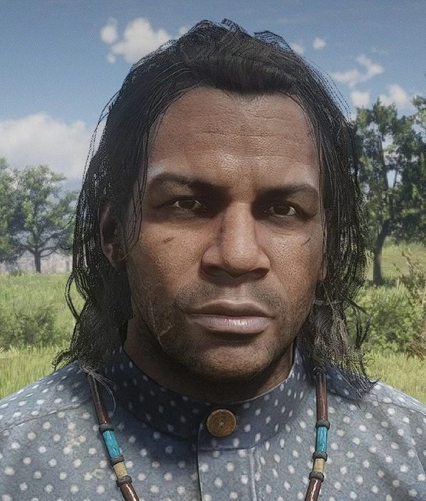
Charles Smith
Charles rejoint le gang en 1898. À Colter, Dutch lui dit de se mettre à l'abri et de "rest that hand" (ménager sa main), et Charles amène The Count et Taima à Dutch et à Arthur avant leur départ. Sur le train de Cornwall, Dutch le poste en guet. Dans "The Aftermath of Genesis", Charles confie à Arthur qu'il ne sait pas ce que ferait Dutch s'il arrivait quelque chose à The Count. Au chapitre 6, Charles désapprouve la manière dont Dutch se sert d'Eagle Flies et des Wapiti, et il reste avec la tribu plutôt que de revenir au gang. En 1907, il accompagne John et Sadie au mont Hagen.

Lenny Summers
Avant le train de Cornwall, Dutch passe son équipe en revue et ajoute : "what about young Lenny here? Always the first man on his horse" (et le jeune Lenny, toujours le premier en selle). Au chapitre 2, il envoie Arthur offrir un verre à Lenny à Valentine, le soir de "A Quiet Time". Dans "Urban Pleasures", Dutch, Arthur et Lenny braquent la gare de tramways de Saint-Denis, pour quinze dollars et vingt-cinq cents chacun, et doivent se frayer un chemin à coups de feu. Lenny est tué sur les toits pendant le braquage de la banque de Saint-Denis, le coup que Dutch dirigeait.

Sean MacGuire
Sean est entré dans le gang après avoir raté le vol de la montre de gousset de Dutch dans une ruelle. Après Blackwater, dans "Old Friends", Dutch le compte parmi ceux qui reviendront tous. Une fois Sean libéré des chasseurs de primes, il demande au camp si Dutch s'est ennuyé de lui, et Dutch répond : "Like the crops miss the sun when it's stuck behind a cloud, my boy" (comme les récoltes regrettent le soleil quand un nuage le cache, mon garçon). Sean est tué dans l'embuscade de Rhodes. Dutch confie plus tard à Arthur qu'il ne veut pas que Sean et Kieran soient morts pour rien.

Kieran Duffy
Kieran, un O'Driscoll, est ramené vivant à Colter après "Old Friends". Dutch l'accueille d'un "Welcome to your new home... hope you're real happy here" (bienvenue chez toi, j'espère que tu t'y plairas) et lui explique : "we shoot fellers as need shooting... save fellers as need saving... and feed 'em as need feeding" (on abat ceux qu'il faut abattre, on sauve ceux qu'il faut sauver, on nourrit ceux qu'il faut nourrir). Au chapitre 2, Dutch ordonne à Bill de le castrer, et Kieran livre la planque des O'Driscoll. Quand les O'Driscoll renvoient son corps mutilé à Shady Belle, Dutch le fait enterrer par Charles, Pearson et Swanson ; en route vers la pendaison de Colm, il parle de "that poor boy" (ce pauvre garçon).

Uncle
Quand Micah demande pourquoi Dutch le garde, Uncle répond que Dutch et lui se connaissent depuis longtemps. Dutch tolère sa paresse, même si dans "Eastward Bound" il prévient le camp : "Uncle, Reverend Swanson... no more passengers" (Uncle, révérend Swanson, finis les passagers). Lors d'une conversation au camp, Uncle relève les contradictions de l'idée que Dutch se fait d'une vie meilleure ; Dutch répond qu'il n'arrive pas à lui en vouloir longtemps. Uncle le surnomme "Your Misery". À Beaver Hollow, il s'en va avec Pearson et Mary-Beth, et au début de "Our Best Selves" Dutch les traite de lâches.

Leopold Strauss
Selon le guide officiel, Strauss a rejoint le gang de Dutch pour sa protection après des années d'escroqueries, et il en tient les comptes. Dutch compte sur ses prêts mais déclare dans "Eastward Bound" : "I prefer robbing banks to usury... seems more dignified somehow" (je préfère braquer des banques que faire de l'usure, ça me paraît plus digne). Le rendez-vous d'affaires de Dutch avec Strauss à Valentine tourne à l'embuscade des hommes de Cornwall dans "The Sheep and the Goats", où Strauss prend une balle dans la jambe. Arthur le chasse du camp au chapitre 6. En 1907, Charles apprend à John que Strauss est mort aux mains de la Pinkerton sans avoir livré le gang.

Simon Pearson
Ancien de la marine, Pearson a été invité dans le gang par Dutch et tient la cuisine. Dans "Old Friends", Dutch demande à Hosea, Charles et Pearson de garder le camp pendant son absence, et à Shady Belle il prie Pearson et Susan de faire des miracles. La rencontre de Pearson avec des O'Driscoll près de Clemens Point débouche sur la proposition de pourparlers de Colm. Au chapitre 4, Dutch le charge d'enterrer Kieran avec Charles et Swanson. Pearson s'en va à Beaver Hollow, et Dutch le traite de lâche.

Orville Swanson
D'après la présentation de Rockstar, Swanson a un jour sauvé la vie de Dutch, ce qui explique que le gang le garde ; le jeu ne dit jamais comment. C'est lui qui prononce la première réplique du jeu, adressée à Dutch dans la tempête de Colter : "Abigail says he's dying, Dutch" (Abigail dit qu'il est en train de mourir, Dutch). Dutch le range parmi les passagers qu'il met au travail dans "Eastward Bound", et l'appelle à l'aide quand Arthur revient blessé de chez Colm. Au chapitre 4, Dutch le charge d'enterrer Kieran. Sobre après Guarma, Swanson quitte le gang à Beaver Hollow.

Tilly Jackson
Selon le guide officiel, les Foreman ont arraché Tilly à sa mère à douze ans ; elle a tué l'un des leurs et s'est enfuie, puis Dutch l'a recueillie et lui a appris à lire. À Colter, il lui demande, avec Karen, de réchauffer Sadie qu'on vient de sauver : "Miss Tilly, Miss Karen, would you warm her up". Pendant le raid sur Beaver Hollow, elle cache Jack. Quand Dutch refuse d'aller chercher Abigail, Arthur donne de l'argent à Tilly et l'envoie avec Jack à Copperhead Landing.

Karen Jones
Karen participe aux arnaques du gang. À Colter, Dutch lui demande, avec Tilly, de réchauffer Sadie. Au chapitre 3, elle prépare le braquage de la banque de Valentine avec Bill et le mène avec Arthur, Bill et Lenny dans "Sodom? Back to Gomorrah" ; Dutch n'est pas de la partie, et Bill prédit que "Dutch is gonna love this" (Dutch va adorer). Après la mort de Sean, elle boit beaucoup. Elle s'en prend à Susan après la mort de Molly et quitte le gang quand il se délite à Beaver Hollow.

Mary-Beth Gaskill
Mary-Beth a croisé la route du gang en fuyant des hommes qu'elle avait volés. Elle partage le goût de Dutch pour la lecture : ce sont les deux membres du gang que l'on voit le plus souvent un livre à la main au camp. Son tuyau sur un train de passagers fortunés à Scarlett Meadows mène à une attaque du gang au chapitre 2. Elle s'en va à Beaver Hollow, et au début de "Our Best Selves" Dutch la cite parmi les lâches qui ont fui. En 1907, elle écrit des romans sentimentaux sous le nom de Leslie Dupont.

Josiah Trelawny
Selon le guide officiel, Trelawny va et vient dans le gang de Dutch comme il l'entend. Dans "The New South", Dutch raconte à Arthur et Hosea qu'un jour, dans un trou perdu, il a ouvert la porte des latrines pour y trouver Trelawny, journal en main, qui l'a salué d'un "Mr. Van der Linde". Dans la même mission, le shérif Gray retient Trelawny ; Dutch, qui se présente comme Hoagy Macintosh, le décrit comme un idiot, mais pas un mauvais bougre, et obtient sa libération. Les renseignements de Trelawny permettent de sauver Sean. Il quitte le gang pour de bon au chapitre 6, avec la bénédiction d'Arthur.

Colm O'Driscoll
Colm dirige les O'Driscoll Boys. Dutch a tué son frère, Colm a tué Annabelle, et les deux gangs se font la guerre depuis. Après Blackwater, Dutch affirme que vouloir la mort de Colm est à peu près la seule chose sur laquelle il est d'accord avec l'État, et dans "Old Friends" il attaque un camp O'Driscoll pour leur voler un coup sur un train. Dans "Blessed are the Peacemakers", il se rend à des pourparlers ; Colm raille son "better world" (monde meilleur) et profite de la rencontre pour capturer Arthur. Après le meurtre de Kieran et l'attaque de Shady Belle, Dutch, Arthur et Sadie assistent à la pendaison de Colm à Saint-Denis et font échouer la tentative de sauvetage des O'Driscoll.

Angelo Bronte
Angelo Bronte, le parrain de Saint-Denis, détient Jack quand le gang arrive. Dutch et Arthur le rencontrent dans "Angelo Bronte, a Man of Honor" et récupèrent le garçon. Bronte les invite à la réception du maire, où Dutch se fait appeler Featherstone Chambers, et quand Dutch lui dit qu'ils ont besoin d'argent, il leur indique la gare de tramways. Le coup rapporte quinze dollars et vingt-cinq cents à chacun des trois hommes et se termine en fusillade. Dans "Country Pursuits", Hosea juge insensée la soif de vengeance de Dutch ; dans "Revenge is a Dish Best Eaten", le gang enlève Bronte, et Dutch le noie puis jette son corps aux alligators.

Leviticus Cornwall
Dutch attaque le train privé de Cornwall dans "Who the Hell is Leviticus Cornwall?", grâce à des papiers pris aux O'Driscoll. Les hommes de Cornwall tendent une embuscade à Dutch et aux siens à Valentine dans "The Sheep and the Goats", et Cornwall finance la traque de la Pinkerton. Dans "Just a Social Call", Dutch l'affronte sur le quai d'Annesburg : "You kill, I kill. You rob, I rob. Only difference I can see is I choose whom I kill, and rob, while you destroy everything in your path" (vous tuez, je tue ; vous volez, je vole ; la seule différence, c'est que je choisis qui je tue et qui je vole, alors que vous détruisez tout sur votre passage). Il réclame dix mille dollars, le bateau et un sauf-conduit ; Cornwall éclate de rire, et Dutch l'abat.

Andrew Milton
L'agent de la Pinkerton traque le gang tout au long de 1899. À Clemens Point, dans "The Battle of Shady Belle", il propose de laisser trois jours d'avance aux autres pour s'enfuir et disparaître si Dutch le suit. Dutch répond que rien ici n'a de civilisé et ajoute : "We have got something, something to live and die for. How awful for us, Mr. Milton" (nous avons quelque chose pour quoi vivre et mourir ; quelle horreur, n'est-ce pas, Mr. Milton). Pendant le braquage de la banque de Saint-Denis, Milton tient Hosea dans la rue ; Dutch lui crie de relâcher son ami, et Milton abat Hosea. À Van Horn, Milton révèle à Arthur que Micah le renseigne depuis Guarma ; Abigail le tue.

Edgar Ross
Edgar Ross se tient aux côtés de Milton à Clemens Point en 1899. En 1907, à la tête du Bureau of Investigation, il examine le corps de Micah au mont Hagen. En 1911, il détient Abigail et Jack, lance John aux trousses de Bill, de Javier et de Dutch, et monte l'opération de la banque de Blackwater dans "Great Men are Not Always Wise". À Cochinay, Dutch prévient John : "When I'm gone, they'll just find another monster. They have to, because they have to justify their wages" (quand je ne serai plus là, ils se trouveront un autre monstre ; il le faut bien, pour justifier leurs salaires). Après la chute, Ross prend l'arme de John et tire sur le corps de Dutch : "it looks better in the report that way" (ça fait mieux dans le rapport).
Eagle Flies
Eagle Flies, fils du chef wapiti Rains Fall, est désigné à Dutch et à Arthur lors de la réception du maire de Saint-Denis. Au chapitre 6, il veut combattre l'armée. Dans "Favored Sons", Dutch se joint à lui et à ses guerriers pour tendre une embuscade à une patrouille, et reconnaît devant Arthur qu'il se sert des Wapiti pour attirer l'attention sur un problème et jeter un voile sur l'autre. Quand les renforts arrivent, Dutch et Arthur s'échappent et Eagle Flies reste en arrière. Dans "My Last Boy", le gang suit sa troupe jusqu'aux champs pétrolifères de Heartland, où Dutch abandonne Arthur ; Eagle Flies y est touché et meurt dans la réserve.
Rains Fall
Rains Fall, chef des Wapiti, assiste à la réception du maire de Saint-Denis avec son fils et remet une lettre au maire. Il travaille avec Arthur pour que son peuple garde ses terres et assiste à l'échec des négociations avec le colonel Favours dans "The Fine Art of Conversation". Dutch choisit l'autre voie : il soutient les actions armées d'Eagle Flies, qui doivent, explique-t-il à Arthur dans "Favored Sons", détourner l'attention de l'État du gang. Le fils de Rains Fall est touché aux champs pétrolifères et meurt dans la réserve.
Alberto Fussar
Le colonel Alberto Fussar, gouverneur de Guarma et partenaire d'affaires de Cornwall, est désigné à Dutch et à Arthur lors de la réception du maire de Saint-Denis. À Guarma, Dutch donne un faux nom, Aiden O'Malley, à Levi Simon, le contremaître de Fussar, et insiste pour que les soldats ignorent qui sont les naufragés. Dutch et Arthur voient les soldats de Fussar traîner Javier derrière un âne devant Aguasdulces, puis le libèrent de la raffinerie. Dans "Paradise Mercifully Departed", Dutch, Arthur, Micah et Hercule Fontaine détruisent les batteries côtières qui retiennent les naufragés sur l'île, Fussar tire au canon du haut d'une tour ; Arthur le tue soit en détruisant la tour avec un autre canon, soit en l'abattant.
Hercule Fontaine
Hercule Fontaine dirige les rebelles de Guarma. Ses hommes attaquent la colonne qui conduit les naufragés en prison dans "Welcome to the New World", et il propose d'aider le gang à quitter l'île si celui-ci l'aide d'abord à libérer des ouvriers capturés en tentant de fuir. Le marché laisse d'abord Dutch sceptique. Une fois au camp rebelle de La Capilla, il accepte d'essayer, Hercule lui ayant fait remarquer que personne d'autre ne peut les aider. Dans "Paradise Mercifully Departed", Dutch se bat à ses côtés contre les batteries côtières de Fussar avant que le gang ne prenne la mer.

Catherine Braithwaite
Au chapitre 3, Dutch entreprend de monter les Braithwaite et les Gray les uns contre les autres. Arthur et Hosea distribuent l'alcool de contrebande de Catherine à Rhodes, et Arthur, John et Javier volent ses chevaux pour les Gray. Après l'enlèvement de Jack, Dutch mène l'assaut contre Braithwaite Manor dans "Blood Feuds, Ancient and Modern", en hurlant "Get down here now! You inbred trash" (descendez, bande de dégénérés). Le gang met le feu à la maison ; Dutch achève l'un de ses fils agonisant et traîne Catherine dehors. Elle lui révèle que ses garçons ont donné Jack à Angelo Bronte, puis retourne dans les flammes.

Nastas
Nastas, informateur amérindien du Bureau qui travaille aux côtés du professeur MacDougal, apprend à John dans "At Home with Dutch" où se cache Dutch, et que des jeunes de la réserve le rejoignent à Cochinay. Il guide John dans les falaises vers la planque jusqu'à ce qu'un mineur le blesse au bras, et John continue seul. Benjamin Byron Davis, l'interprète de Dutch, prête aussi sa voix à Nastas dans Red Dead Redemption.

Harold MacDougal
Harold MacDougal, anthropologue de Yale installé à Blackwater, aide John à remonter jusqu'à Dutch à Cochinay. Dans "The Prodigal Son Returns (To Yale)", les hommes de Dutch cernent la ville, et Dutch lance : "I think that's what they call, two for the price of one out here in this wonderful place!" (je crois que c'est ce qu'on appelle deux pour le prix d'un, dans ce merveilleux pays). Il annonce qu'il va les tuer tous les deux ; quand John demande pourquoi, il répond : "I don't know, sport, I guess" (je sais pas, pour le sport, je suppose). Il demande ensuite à John de lui envoyer cet universitaire, pour que ses hommes lui montrent ce qu'ils pensent de l'anthropologie. Nashoba retient MacDougal en otage sur le toit de l'hôtel ; John le délivre en passant par les toits, puis l'escorte à cheval jusqu'à la gare de Manzanita Post.

Archer Fordham
Archer Fordham travaille sous les ordres d'Edgar Ross au Bureau of Investigation. En 1907, il assiste Ross après la mort de Micah, et en 1911 il est sur le toit face à la banque de Blackwater, puis dans la colonne qui marche sur Cochinay. En chemin, il traite Dutch de psychopathe, d'assassin et de violeur ; John réplique que Dutch "was a good man once, a far better man than you" (a été un homme bien, bien meilleur que vous). Après la chute de Dutch, Fordham déclare à John qu'il a fait honneur à son pays.
Evelyn Miller
Evelyn Miller, écrivain et ancien enseignant de Princeton, est l'auteur préféré de Dutch. Dutch lisait ses livres à John enfant ; dans son journal de 1907, John le présente comme "the writer I grew up with, Dutch's favorite, even though I never really understood a word of what he said" (l'écrivain avec qui j'ai grandi, le préféré de Dutch, même si je n'ai jamais vraiment compris un mot de ce qu'il racontait). Au camp, Dutch lit à voix haute : "The whole point of America is freedom. Freedom of thought, freedom of deed, freedom of action" (l'Amérique, c'est la liberté : liberté de pensée, liberté d'agir, liberté d'action). Arthur croise Miller à la réception du maire de Saint-Denis, et Dutch lui raconte ensuite qu'il a parlé avec lui et le juge homme de valeur. Lenny le tient pour un imposteur.
Compétences, armes et chevaux
Éloquence et commandement
La parole est l'outil principal de Dutch. À Colter, après la mort de Davey, il tient par un discours un gang transi de froid, et il le remobilise après l'attaque de "Old Friends". Dans "Eastward Bound", il rassemble tout le monde à Clemens Point, annonce qu'il est temps de travailler, rappelle que le camp touche sa part et prévient Uncle et Swanson qu'il n'y aura plus de passagers. Il prépare ses coups dans le détail : sur le train de Cornwall, il prend le chauffeur et le mécanicien et mène l'assaut, envoie Bill poser la charge, Lenny et Javier vers les wagons de tête, Arthur et Micah vers la voiture privée, et poste Charles en guet. Il sait aussi s'arranger avec la loi : sous le nom de Hoagy Macintosh, il obtient du shérif Gray qu'il relâche Trelawny dans "The New South", et dans "American Distillation" il est nommé adjoint provisoire. Il négocie en face à face, comme avec Cornwall sur le quai d'Annesburg, et s'adresse aux soldats qui l'acculent dans "Favored Sons" : "You can't fight nature, captain. You can't fight change. You can't fight... gravity" (on ne lutte pas contre la nature, capitaine, ni contre le changement, ni contre la gravité).
Combat
Dutch se bat en première ligne. Il tient tête aux hommes de Cornwall à Valentine dans "The Sheep and the Goats", mène l'assaut contre Braithwaite Manor et abat Cornwall à bout portant dans "Just a Social Call". Il tue aussi de ses mains : il étrangle Gloria à Guarma et noie Angelo Bronte. En 1907, c'est lui qui tire le premier sur Micah. En 1911, il abat une otage, Muriel Scranton, d'une balle dans la tête à la banque de Blackwater, s'enfuit en automobile, tire sur John quand il le repère en train d'observer Cochinay aux jumelles, et retourne une mitrailleuse sur affût contre ceux qui attaquent son camp. Il n'utilise jamais d'arme d'épaule dans aucun des deux jeux, même si une illustration promotionnelle de Red Dead Redemption 2 le montre un Bolt Action Rifle sur l'épaule.
Armes
En 1899, il porte deux Schofield Revolvers personnalisés, carcasse noire et argent, crosse de nacre et gravures dorées, dans un ceinturon à double étui. À Guarma, il se sert à la place d'une paire de Double-Action Revolvers. Il a aussi son propre couteau de chasse, marqué de ses initiales D.V.L sur l'étui, qu'il n'utilise qu'une fois, dans "Just a Social Call". Son bandana est à carreaux rouges et blancs, quand la plupart des membres du gang en portent un noir uni. En 1911, les Schofield ont disparu et son arme est un Semi-automatic Pistol.
Chevaux
Son cheval de 1899 est The Count, un étalon arabe blanc que le jeu décrit comme albinos. Arthur raconte à Charles que The Count l'a désarçonné "plus vite qu'un taureau" la seule fois où il a essayé de le monter, et Charles dit dans "The Aftermath of Genesis" qu'il ne sait pas ce que ferait Dutch s'il arrivait quelque chose à ce cheval. Bill le monte dans le convoi vers Colter ; Sadie revient du ranch Adler en croupe avec Dutch ; Dutch le lance contre le cheval d'Arthur au retour de "American Distillation". Dans "Favored Sons", il tente de fuir sur son dos avant de continuer à pied, puis saute avec Arthur dans la rivière. Il échappe au raid des Pinkerton sur Beaver Hollow sur The Count, que l'on ne revoit plus ensuite. En 1911, il n'a plus de cheval dans l'histoire : il quitte la banque de Blackwater en automobile, retrouvée plus tard en flammes au bord de la route.
Missions
Le Red Dead Wiki recense 41 missions de Red Dead Redemption 2 où Dutch apparaît, dont une où l'on entend seulement sa voix, et quatre missions de Red Dead Redemption. L'édition française du wiki en ajoute deux, "Advertising, The New American Art" et "Dear Uncle Tacitus", dans lesquelles Dutch s'entretient avec Arthur ; elles figurent ci-dessous, avec une mention. Aux chapitres 1 à 6, le joueur incarne Arthur Morgan ; dans l'épilogue et dans Red Dead Redemption, John Marston. Dutch n'est jamais jouable.
Red Dead Redemption 2
| Mission | Chapitre | Rôle de Dutch |
|---|---|---|
| Outlaws from the West | 1. Colter | Harangue le gang à Colter, part avec Arthur, retrouve Micah et se fait passer pour un voyageur égaré devant le ranch des Adler, occupé par des O'Driscoll. Après la fusillade, il couvre Sadie Adler d'une couverture et la ramène au camp sur son cheval. |
| Old Friends | 1. Colter | Sépare Micah et Bill qui en viennent aux mains, puis mène l'attaque du camp O'Driscoll d'Ewing Basin, où des papiers révèlent l'existence du train de Cornwall. De retour à Colter, il fait ligoter Kieran Duffy. |
| Who the Hell is Leviticus Cornwall? | 1. Colter | Prépare et dirige l'attaque du train privé de Leviticus Cornwall malgré les objections d'Hosea ; il parlemente avec les gardes retranchés dans le wagon avant qu'on le fasse sauter. |
| Eastward Bound | 1. Colter | Conduit le convoi hors des montagnes jusqu'à Horseshoe Overlook et met tout le monde au travail à l'arrivée. |
| Americans at Rest | 2. Horseshoe Overlook | Arrive au saloon de Valentine avec Josiah Trelawny, qui annonce que des chasseurs de primes détiennent Sean, et envoie ses hommes se renseigner. |
| Paying a Social Call | 2. Horseshoe Overlook | Ordonne à Bill de castrer Kieran, ce qui pousse celui-ci à livrer l'emplacement de Six Point Cabin. |
| A Quiet Time | 2. Horseshoe Overlook | Charge Arthur de faire évader Micah de Strawberry plus tard et, en attendant, d'emmener Lenny boire à Valentine. |
| A Fisher of Men | 2. Horseshoe Overlook | Écoute le rapport d'Arthur sur les agents Pinkerton Milton et Ross et décide de ne rien faire pour l'instant. |
| The Sheep and the Goats | 2. Horseshoe Overlook | Se dispute avec Strauss au Keane's Saloon, l'envoie encaisser le prix des moutons avec John et prend un verre avec Arthur ; quand les hommes de Cornwall prennent John et Strauss en otages, il détourne leur attention pour qu'Arthur dégaine, puis décide de déplacer le camp. |
| A Strange Kindness | 2. Horseshoe Overlook | Envoie Arthur et Charles inspecter Dewberry Creek, un site proposé par Micah, et approuve le nouveau camp. |
| The New South | 3. Clemens Point | Part à cheval avec Arthur et Hosea, croise le shérif Leigh Gray et obtient la libération de Trelawny en échange de la capture, par Arthur, des frères Anderson évadés. |
| American Distillation | 3. Clemens Point | Nommé adjoint temporaire par le shérif Gray avec Arthur et Bill ; il attaque une distillerie clandestine avec l'adjoint Archibald MacGregor. |
| Advertising, The New American Art | 3. Clemens Point | Mission listée par le wiki français seulement. Au camp, avec Micah, il expose à Arthur son plan pour monter les Gray et les Braithwaite les uns contre les autres. |
| Magicians for Sport | 3. Clemens Point | Écarte les rumeurs de chasseurs de primes mais envoie Arthur et Charles prendre des nouvelles de Trelawny. |
| Blessed are the Peacemakers | 3. Clemens Point | Accepte, sur l'insistance de Micah, une rencontre de trêve avec Colm O'Driscoll à Flatneck Station ; c'est un piège, et Arthur est capturé. |
| Blood Feuds, Ancient and Modern | 3. Clemens Point | Mène l'assaut sur Braithwaite Manor après l'enlèvement de Jack, achève un fils Braithwaite encore à peine vivant, puis traîne Catherine Braithwaite dehors et l'interroge lui-même jusqu'à ce qu'elle désigne Angelo Bronte. |
| The Battle of Shady Belle | 3. Clemens Point | Tient tête aux agents Milton et Ross à Clemens Point, fait mine de se rendre, puis refuse leur marché. Il charge Arthur et John de nettoyer Shady Belle, où le gang s'installe ensuite, puis part de là avec Arthur en direction de Saint-Denis. |
| The Joys of Civilization | 4. Saint-Denis | Pointe une arme sur Arthur devant le saloon de Saint-Denis pour plaisanter, puis le laisse chercher des pistes sur Bronte. |
| Angelo Bronte, A Man of Honor | 4. Saint-Denis | Entre chez Bronte avec Arthur et John à force de bagou et obtient le retour de Jack en échange d'un service. |
| The Gilded Cage | 4. Saint-Denis | Assiste en smoking à la garden-party du maire Lemieux ; Bronte lui indique la station de tramway. |
| Horsemen, Apocalypses | 4. Saint-Denis | Prépare le coup du tramway avec Arthur, puis dirige la défense de Shady Belle quand les O'Driscoll envoient le corps de Kieran au camp et passent à l'attaque. |
| Urban Pleasures | 4. Saint-Denis | Braque la station de tramway avec Arthur et Lenny ; le butin est maigre, et il est blessé à la tête quand le tramway de leur fuite déraille. |
| Country Pursuits | 4. Saint-Denis | Obtient le soutien d'Arthur contre Hosea pour s'en prendre à Bronte, puis aide le pêcheur Thomas à retrouver Jules dans le bayou, près de Lagras. |
| Revenge is a Dish Best Eaten | 4. Saint-Denis | Attaque le manoir de Bronte, le capture, le noie depuis la barque, puis livre son corps à un alligator. |
| Banking, The Old American Art | 4. Saint-Denis | Dirige le braquage de la Lemoyne National Bank ; voit Hosea tué par Milton, fait sauter le mur de la salle des coffres et décide de fuir par bateau. |
| Lost and Not Quite Found | 4. Saint-Denis | Cinématique : réveille Arthur à bord de l'Antenor en perdition et se retrouve séparé de lui ; il part dans un canot. |
| Welcome to the New World | 5. Guarma | Accueille Arthur sur la plage de Guarma ; enchaîné par la milice de Levi Simon, il s'évade avec le gang lors de l'attaque des rebelles. |
| A Kind and Benevolent Despot | 5. Guarma | Paie la guide Gloria en or, l'étrangle quand elle exige davantage sous la menace d'un couteau, puis libère Javier à Aguasdulces avec Arthur. |
| Hell Hath No Fury | 5. Guarma | Se dispute avec Hercule Fontaine au sujet du bateau promis, puis défend le fort de Cinco Torres contre le débarquement cubain. |
| Paradise Mercifully Departed | 5. Guarma | Dans la cabane des ouvriers, Levi Simon tient Arthur en joue, Dutch braque Simon et Fussar braque Dutch ; le capitaine du navire abat Simon, et Fussar s'enfuit. |
| Dear Uncle Tacitus | 5. Guarma | Mission listée par le wiki français seulement. Sur le bateau du retour de Guarma, il demande à Arthur de gagner Shady Belle et d'y chercher des traces du gang. |
| Fleeting Joy | 5. Guarma | Retrouve le gang à Lakay ; après l'attaque des Pinkerton, il remercie Arthur et répond de façon évasive quand Abigail lui parle de John. |
| That's Murfree Country | 5. Guarma | Envoie Arthur et Charles chercher un camp au nord ; à Beaver Hollow, il tente de tuer Molly O'Shea, abattue par Susan Grimshaw. |
| Visiting Hours | 6. Beaver Hollow | S'emporte en voyant John revenir de Sisika ; Arthur reconnaît avoir désobéi, et Dutch affirme qu'il avait un plan. |
| Just a Social Call | 6. Beaver Hollow | Aborde Cornwall à Annesburg avec Arthur et Micah, lui propose la vie sauve contre 10 000 dollars, son bateau et un sauf-conduit, et l'abat quand il refuse. |
| A Rage Unleashed | 6. Beaver Hollow | Accepte d'aider Eagle Flies à récupérer les chevaux des Wapiti saisis par l'armée et les vole avec Arthur et Charles sur un bateau de l'armée ; il le dirige vers la rive, le bateau prend l'eau, et les chevaux regagnent la terre à la nage. |
| Goodbye, Dear Friend | 6. Beaver Hollow | Assiste à la pendaison de Colm à Saint-Denis, déguisé en policier, avec Arthur et Sadie, pour empêcher toute évasion. |
| Favored Sons | 6. Beaver Hollow | Tend une embuscade à une patrouille de l'armée avec les Wapiti ; acculé au bord d'une falaise, il parle au capitaine et saute dans la rivière avec Arthur. |
| My Last Boy | 6. Beaver Hollow | Mène l'attaque des champs pétrolifères, trouve les obligations d'État et s'éloigne quand Arthur est pris par les soldats ; il le nie ensuite. |
| Our Best Selves | 6. Beaver Hollow | Dirige l'attaque du train de la solde de l'armée ; après la chute de John, il repart le chercher et revient en affirmant qu'il est mort. |
| Red Dead Redemption | 6. Beaver Hollow | Se range à l'avis de Micah au sujet d'Abigail, puis fait face à Arthur, John et Susan au camp ; il fuit les Pinkerton, puis écrase la main d'Arthur avant de s'en aller. |
| Old Habits | Épilogue, partie 1 | Voix seulement : dans la cinématique finale, John se souvient d'un conseil de Dutch tiré d'une conversation au camp. |
| American Venom | Épilogue, partie 2 | Sort de la cabane de Micah au mont Hagen, tire sur Micah en pleine poitrine, laisse John l'achever et abandonne l'argent de Blackwater. |
Red Dead Redemption
Dans Red Dead Redemption, Dutch apparaît dans quatre missions, toutes dans l'acte de West Elizabeth, en 1911, où le Bureau of Investigation lance John à sa poursuite. Trois autres missions du même acte, "Bear One Another's Burdens", "For Purely Scientific Purposes" et "And You Will Know The Truth", opposent John à la bande de Dutch sans que celui-ci apparaisse à l'écran ; le wiki ne les compte donc pas. Dutch est absent d'Undead Nightmare et n'apparaît pas dans les actes précédents, situés dans le New Austin et au Nuevo Paraíso.
| Mission | Acte | Rôle de Dutch |
|---|---|---|
| Great Men are Not Always Wise | Acte III, West Elizabeth | Retient des otages dans la banque de Blackwater. Acculé par John et les représentants de la loi, il parle, puis tire une balle dans la tête de l'employée Muriel Scranton et s'enfuit en automobile, retrouvée plus loin accidentée et en flammes. |
| At Home with Dutch | Acte III, West Elizabeth | Vu dans les jumelles de l'éclaireur Helaku, à Cochinay : il exécute un représentant de la loi prisonnier, puis tire sur John et touche les jumelles, ce qui l'assomme. |
| The Prodigal Son Returns (To Yale) | Acte III, West Elizabeth | Fait voler en éclats une fenêtre de l'hôtel de Blackwater et annonce qu'il va tuer John et Harold MacDougal ; ses hommes tiennent les toits. |
| And The Truth Will Set You Free | Acte III, West Elizabeth | Tient une mitrailleuse sur affût à Cochinay jusqu'à ce que John y mette le feu, s'enfuit par les grottes et se laisse tomber de la falaise après avoir parlé à John. |
Personnages notables tués par Dutch
Le tableau reprend la liste du Red Dead Wiki des personnes nommées tuées par Dutch, dans l'ordre du récit, et y ajoute le représentant de la loi exécuté dans "At Home with Dutch", tiré du récit de la mission par le wiki. Les ennemis anonymes abattus lors des fusillades ne sont pas comptés. Une seule entrée dépend du joueur. Deux de ces morts, celle du frère de Colm et celle de Heidi McCourt, précèdent le récit et ne sont connues que par ce qu'en disent les personnages ; les autres sont montrées à l'écran.
| Nom | Jeu | Mission | Circonstances |
|---|---|---|---|
| Le frère de Colm O'Driscoll | RDR2 | Avant le récit | Tué des années avant 1899, dans des circonstances que le jeu ne montre pas. Dutch le reconnaît lui-même en route vers le rendez-vous de "Blessed are the Peacemakers" : "I killed Colm's brother... long time ago". Colm a répliqué en tuant Annabelle, la femme que Dutch aimait. |
| Heidi McCourt | RDR2, RDR1 | Braquage du ferry de Blackwater (1899) | Jamais montrée. Javier raconte à Arthur que Dutch a tué une fille "d'une sale façon" ("Enter, Pursued by a Memory") ; Trelawny la nomme et parle d'une jeune mère ("The First Shall Be Last") ; dans Red Dead Redemption, l'Étranger affirme que Dutch lui a tiré une balle dans la tête sur le ferry ("I Know You"). |
| Billy | RDR2 | Outlaws from the West | Facultatif : un O'Driscoll resté au ranch des Adler après le raid ; tué dans la fusillade par Dutch, Arthur ou Micah. |
| A Braithwaite son | RDR2 | Blood Feuds, Ancient and Modern | Dans la pièce barricadée de l'étage, Dutch abat l'un des fils de Catherine Braithwaite sous ses yeux. D'après la page de la mission, ce fils respire encore à peine après l'assaut de la pièce. Le jeu ne précise pas duquel de ses fils il s'agit. |
| Angelo Bronte | RDR2 | Revenge is a Dish Best Eaten | Capturé dans son manoir, il est maintenu sous l'eau depuis la barque jusqu'à la noyade, puis jeté à un alligator, pour se venger du piège de la station de tramway. |
| Gloria | RDR2 | A Kind and Benevolent Despot | Guide des grottes de Guarma, payée avec le dernier lingot du gang. À la sortie, elle exige davantage et sort un couteau ; Dutch l'étrangle à mort, puis assure à Arthur qu'elle les aurait trahis. |
| Leviticus Cornwall | RDR2 | Just a Social Call | Abattu d'une balle dans la poitrine sur les quais d'Annesburg après avoir refusé les conditions de Dutch ; Dutch lui reproche de payer les Pinkerton pour traquer le gang. |
| Micah Bell | RDR2 | American Venom | En 1907, au mont Hagen, Dutch met fin au face-à-face à trois en tirant sur Micah, en pleine poitrine ; John tire ensuite les coups mortels. |
| Représentant de la loi prisonnier | RDR1 | At Home with Dutch | Exécuté par Dutch à Cochinay, sous les yeux de John qui l'observe aux jumelles depuis les hauteurs. |
| Muriel Scranton | RDR1 | Great Men are Not Always Wise | Employée de banque prise en otage à Blackwater. Dutch lui tire une balle dans la tête au moment de la relâcher, pousse son corps vers John et s'échappe. |
Citations
Les répliques ci-dessous sont reproduites telles qu'elles sont prononcées dans le jeu, en anglais, avec la mission et la personne à qui elles s'adressent.
Red Dead Redemption 2, chapitres 1 à 3
Now all of you... all of you... get yourselves warm. Stay strong. Stay with me. We ain't done yet!
Outlaws from the West (RDR2, chapitre 1), au gang réfugié à Colter après le désastre de Blackwater. Traduction : « Maintenant, vous tous... vous tous... réchauffez-vous. Tenez bon. Restez avec moi. On n'a pas dit notre dernier mot ! »Some things I can forgive, others I can forget. What he did to Annabelle, I can't do neither.
Old Friends (RDR2, chapitre 1), à Arthur et aux hommes en route vers le camp O'Driscoll, à propos de Colm. Traduction : « Il y a des choses que je peux pardonner, d'autres que je peux oublier. Ce qu'il a fait à Annabelle, je ne peux ni l'un ni l'autre. »I got a saying, my friend... we shoot fellers as need shooting... save fellers as need saving... and feed 'em as need feeding. We're gonna find out what you need.
Old Friends (RDR2, chapitre 1), à Kieran Duffy, ramené prisonnier à Colter. Traduction : « J'ai un dicton, mon ami... on abat ceux qu'il faut abattre... on sauve ceux qu'il faut sauver... et on nourrit ceux qu'il faut nourrir. On va voir ce qu'il te faut, à toi. »They can pummel us as hard as they like, but we will always get back up and fight. That's who we are. Outlaws for life, fellers.
Old Friends (RDR2, chapitre 1), à ses hommes après le raid sur le camp O'Driscoll. Traduction : « Ils peuvent nous cogner aussi fort qu'ils veulent, on se relèvera toujours pour se battre. C'est ce qu'on est. Hors-la-loi à vie, les gars. »Listen to me, we don't want to kill any of ya... any more of ya. I give you my word, but trust me... we will.
Who the Hell is Leviticus Cornwall? (RDR2, chapitre 1), aux occupants du wagon de Cornwall, une partie de la réplique visant ses propres hommes ; une version de la réplique figure dans les bandes-annonces. Traduction : « Écoutez-moi, on ne veut tuer aucun d'entre vous... plus aucun. Vous avez ma parole, mais croyez-moi... on le fera. »You have turned into my son... you worry because I worry. We are just the same.
A Strange Kindness (RDR2, chapitre 2), à Arthur, qui se plaint d'être devenu un garçon de courses ; Arthur réentend le début de la phrase pendant sa dernière chevauchée, avec un honneur bas. Traduction : « Tu es devenu mon fils... tu t'inquiètes parce que je m'inquiète. On est pareils. »It's funny... us ending up down here. My daddy died in a field in Pennsylvania, fighting this lot.
The New South (RDR2, chapitre 3), à Arthur et Hosea, en quittant Clemens Point à cheval. Traduction : « C'est drôle... qu'on finisse par atterrir ici. Mon père est mort dans un champ de Pennsylvanie, en se battant contre ces gens-là. »We have lofty goals, Arthur. We're trying to reform society to a kinder, truer, better way. Now of course there's gonna be casualties.
The New South (RDR2, chapitre 3), à Arthur. Traduction : « Nous avons de nobles ambitions, Arthur. Nous essayons de réformer la société, de la rendre plus bienveillante, plus juste, meilleure. Bien sûr, il y aura des victimes. »The promise of this great nation, men created equal, liberty and justice for all... that might be nonsense too. But it's worth trying for. It's worth believing in. Can't you see that, friend?
Blessed are the Peacemakers (RDR2, chapitre 3), à Arthur, en route vers la rencontre de trêve avec Colm. Traduction : « La promesse de cette grande nation, des hommes nés égaux, la liberté et la justice pour tous... ce sont peut-être des sornettes, aussi. Mais ça vaut la peine d'essayer. Ça vaut la peine d'y croire. Tu ne le vois pas, mon ami ? »This place, ain't no such thing as civilized. It's man so in love with greed, he has forgotten himself and found only appetites.
The Battle of Shady Belle (RDR2, chapitre 3), à l'agent Andrew Milton, à Clemens Point ; le début de la réplique figure dans les bandes-annonces. Traduction : « Ici, il n'y a rien de civilisé. C'est l'homme, tellement épris de cupidité qu'il s'est oublié lui-même et n'a trouvé que des appétits. »
Red Dead Redemption 2, chapitres 4 à 6
You tell me, Arthur. Is it? Have some goddamn faith.
Country Pursuits (RDR2, chapitre 4), à Arthur, qui lui demande si le plan de Tahiti va vraiment marcher. Traduction : « À toi de me le dire, Arthur. Ça va marcher ? Aie un peu la foi, bon sang. »It ain't nice, I know it... but it is us, or him. I figure it might as well be him.
Revenge is a Dish Best Eaten (RDR2, chapitre 4), à John, après avoir noyé Angelo Bronte. Traduction : « C'est pas joli, je sais... mais c'est nous ou lui. Tant qu'à faire, autant que ce soit lui. »Mr. Milton, let my friend go. Or folk, they are gonna get shot unnecessarily!
Banking, The Old American Art (RDR2, chapitre 4), à l'agent Milton, qui tient Hosea devant la banque. Traduction : « Monsieur Milton, relâchez mon ami. Sinon, des gens vont se faire tuer pour rien ! »Loyalty, Arthur, it ain't... I had a goddamn plan!
Visiting Hours (RDR2, chapitre 6), à Arthur, qui a fait évader John de Sisika contre ses ordres. Traduction : « La loyauté, Arthur, ce n'est pas... J'avais un plan, bon sang ! »You kill, I kill. You rob, I rob... only difference I can see is I choose whom I kill and rob and you destroy everything in your path.
Just a Social Call (RDR2, chapitre 6), à Leviticus Cornwall, sur les quais d'Annesburg. Traduction : « Vous tuez, je tue. Vous volez, je vole... La seule différence, c'est que moi, je choisis qui je tue et qui je vole, alors que vous détruisez tout sur votre passage. »You lost your husband. I lost my darling, Annabelle. That poor boy, Kieran. We've all lost something because of Colm. And that is why we will shepherd him to eternity.
Goodbye, Dear Friend (RDR2, chapitre 6), à Sadie Adler, avant la pendaison de Colm. Traduction : « Tu as perdu ton mari. J'ai perdu ma chère Annabelle. Ce pauvre Kieran. On a tous perdu quelque chose à cause de Colm. Et c'est pour ça qu'on va l'accompagner jusqu'à l'éternité. »You're fighting nature, Captain. Ask my friend here... my whole life I tried to fight change... it's a waste... I see that now... it's a waste. You can't fight nature, Captain... you can't fight change... you can't fight... gravity.
Favored Sons (RDR2, chapitre 6), au capitaine de l'armée qui le tient acculé avec Arthur au bord de la falaise, juste avant leur saut. Traduction : « Vous vous battez contre la nature, capitaine. Demandez à mon ami... toute ma vie, j'ai essayé de lutter contre le changement... c'est peine perdue... je le vois bien maintenant... c'est peine perdue. On ne lutte pas contre la nature, capitaine... on ne lutte pas contre le changement... on ne lutte pas contre... la gravité. »Micah... it pains me to say it, Arthur... but he is right.
Red Dead Redemption (RDR2, chapitre 6), à Arthur, après que Tilly a annoncé que Milton a emmené Abigail. Traduction : « Micah... ça me coûte de le dire, Arthur... mais il a raison. »Now! Who amongst you... is with me... and who, is betraying me?!
Red Dead Redemption (RDR2, chapitre 6), au gang, pendant le face-à-face entre Arthur et Micah à Beaver Hollow. Traduction : « Alors ! Qui parmi vous... est avec moi... et qui me trahit ?! »
Red Dead Redemption 2, épilogue (1907)
Hello, son. Mrs. Adler. Been quite a while.
American Venom (RDR2, épilogue), à John et Sadie, en sortant de la cabane de Micah au mont Hagen. Traduction : « Bonjour, fiston. Madame Adler. Ça fait un bail. »I was trying to do my best... you... you just cared for yourself.
American Venom (RDR2, épilogue), à John, pendant le face-à-face. Traduction : « J'essayais de faire de mon mieux... toi... tu ne pensais qu'à toi. »I ain't got too much to say no more...
American Venom (RDR2, épilogue), sa réponse quand John lui hurle de dire quelque chose, juste avant de tirer sur Micah. Traduction : « J'ai plus grand-chose à dire... »
Red Dead Redemption (1911)
We all make mistakes, John. I never claimed to be a saint. But equally, I never took you for an errand boy.
Great Men are Not Always Wise (RDR1, acte III), à John, dans la banque de Blackwater, quand John lui rappelle qu'il l'a laissé pour mort. Traduction : « On fait tous des erreurs, John. Je n'ai jamais prétendu être un saint. Mais je ne t'ai jamais pris non plus pour un garçon de courses. »We aren't thieves, John, we're fighting for something. A bit like you, only we're fighting for an idea, not just for ourselves.
The Prodigal Son Returns (To Yale) (RDR1, acte III), à John, en criant vers l'hôtel de Blackwater. Traduction : « On n'est pas des voleurs, John, on se bat pour quelque chose. Un peu comme toi, sauf qu'on se bat pour une idée, pas seulement pour nous-mêmes. »Looks like it's me and you, John. You should have stayed at home. Working for the government, John. After all I taught you. I'm ashamed.
And The Truth Will Set You Free (RDR1, acte III), à John, depuis la mitrailleuse sur affût de Cochinay. Traduction : « On dirait qu'il ne reste que toi et moi, John. Tu aurais dû rester chez toi. Travailler pour le gouvernement, John. Après tout ce que je t'ai appris. J'ai honte. »We can't always fight nature, John. We can't fight change. We can't fight gravity. We can't fight nothing. My whole life, all I ever did was fight.
And The Truth Will Set You Free (RDR1, acte III), à John, au bord de la falaise de Cochinay. Traduction : « On ne peut pas toujours lutter contre la nature, John. On ne peut pas lutter contre le changement. On ne peut pas lutter contre la gravité. On ne peut lutter contre rien. Toute ma vie, je n'ai fait que me battre. »But I can't give up, neither. I can't fight my own nature. That's the paradox, John. You see?
And The Truth Will Set You Free (RDR1, acte III), à John, sur la falaise. Traduction : « Mais je ne peux pas abandonner non plus. Je ne peux pas lutter contre ma propre nature. C'est ça, le paradoxe, John. Tu comprends ? »When I'm gone, they'll just find another monster. They have to, because they have to justify their wages.
And The Truth Will Set You Free (RDR1, acte III), à John, à propos des agents du gouvernement. Traduction : « Quand je ne serai plus là, ils se trouveront simplement un autre monstre. Il le faut bien, pour justifier leur salaire. »Our time is passed, John.
And The Truth Will Set You Free (RDR1, acte III), ses derniers mots, avant de se laisser tomber de la falaise. Traduction : « Notre temps est révolu, John. »
Conception et interprétation
Benjamin Byron Davis interprète Dutch dans les deux jeux. Pour Red Dead Redemption 2, il raconte à GQ, en avril 2019, que le planning a démarré à l'été 2013, que les séances de capture se sont étalées sur 2014, 2016 et 2017, et que jouer Dutch au sommet de sa forme pendant près d'un an avant son déclin a été déchirant. Avec ses 1,98 m, sa taille a dû être ajustée par les animateurs.
Le scénariste Michael Unsworth explique à Variety que Dutch se voit moins comme un criminel que comme un homme qui résiste à un système de pouvoir corrompu. Davis confie à Twinfinite voir en lui un homme de principes et un rêveur, pour qui le voyage comptait plus que l'arrivée.
Accueil
Twinfinite désigne Dutch meilleur personnage de 2018 et Davis meilleur comédien de doublage de l'année. Dans la liste de Polygon des 70 meilleurs personnages de jeu vidéo de la décennie (2019), Cass Marshall écrit que Dutch a commencé en héros populaire et révolutionnaire, et fini en homme triste et brisé. Colin Campbell, dans Polygon également, se montre plus sévère et le qualifie de fanfaron manipulateur.
Autres médias et postérité
Promotion
Rockstar annonce Red Dead Redemption 2 le 18 octobre 2016 et publie une première bande-annonce deux jours plus tard. La deuxième, le 28 septembre 2017, révèle Arthur Morgan comme héros et Dutch van der Linde comme l'un des personnages centraux. La troisième, sortie le 2 mai 2018, reprend la scène de "That's Murfree Country" où Dutch demande à Arthur s'il le soutient toujours. Le 5 septembre 2018, Rockstar publie une proclamation de l'agence Pinkerton réclamant la capture de Dutch, mort ou vif, sur Twitter. Le lendemain, selon Game Informer et rdr2.org, l'éditeur dévoile 23 portraits des membres du gang, à raison d'un toutes les 30 minutes. La présentation de Dutch par Rockstar le décrit comme idéaliste, anarchiste, charismatique, cultivé, ayant beaucoup vécu, mais peut-être en train de vaciller sous la pression du monde moderne qui progresse. Le Collector's Box, vendu sans le jeu, contenait un jeu de cartes illustré des principaux membres du gang, dont Dutch.
"I have a plan"
Après la sortie du jeu, l'obstination de Dutch à avoir un plan, à manquer d'argent et à viser Tahiti devient une plaisanterie récurrente chez les joueurs. Dans un article d'Andrew Scariati publié le 28 mai 2023, TheGamer compte qu'il prononce le mot "plan", sous une forme ou une autre, au moins 28 fois dans l'histoire principale, sans les événements aléatoires ni les conversations répétables, et qu'il évoque 37 fois le besoin d'argent pour le mener à bien. Just Cause 4, d'Avalanche Studios, sorti en décembre 2018, cache dans une grotte de la région de Solís un bonhomme de neige portant deux carottes dans ses étuis, à côté d'un panneau "I Have a Plan!", un clin d'œil relevé par Vida Extra le 9 août 2024.
Rééditions
Red Dead Redemption 2 sort sur Windows le 5 novembre 2019. Red Dead Redemption, qui contient la dernière apparition de Dutch, ressort sur PlayStation 4 et Nintendo Switch le 17 août 2023, puis sur Windows le 29 octobre 2024. Benjamin Byron Davis a incarné Dutch dans les deux jeux ; il a aussi prêté sa voix à des passants et à la radio de Grand Theft Auto: San Andreas (2004) et joué Paul Kadarowski dans L.A. Noire (2011).
Anecdotes
Red Dead Redemption
- Dutch est le seul des trois anciens compagnons de John que le joueur n'a jamais le choix de tuer. Bill Williamson peut être abattu par John ou par Abraham Reyes, et Javier Escuella peut être capturé ou tué ; Dutch, lui, se laisse tomber de la falaise.
- Après sa mort, Ross prend le pistolet de John et tire sur le corps de Dutch, en expliquant que ça fera mieux dans le rapport. Il plaisante ensuite en prétendant qu'Abigail a été tuée dans une émeute de prison, avant d'annoncer à John que sa famille a été renvoyée à Beecher's Hope.
- Sa phrase sur l'autre monstre qu'ils se trouveront est suivie, dans le récit, par l'assaut du Bureau sur Beecher's Hope, où John est tué.
- Dans "Great Men are Not Always Wise", en quittant Blackwater à cheval vers le camp de bûcherons, John lance à Ross qu'il le tuerait cent fois avant de tuer Dutch, s'il avait le choix. Plus tôt dans la mission, il a vu Dutch abattre Muriel Scranton dans la banque.
- En 1911, Dutch porte un pistolet semi-automatique, une arme allemande récente selon la description de l'armurier, et il quitte la banque de Blackwater en automobile plutôt qu'à cheval.
- Ses armes varient dans "And The Truth Will Set You Free". Quand il quitte la mitrailleuse sur affût, il a un pistolet High Power dans son étui ; dans les grottes, il tire d'abord au High Power, puis au pistolet semi-automatique, et une fois acculé, le jeu le montre souvent avec un revolver Cattleman. Dans "The Prodigal Son Returns (To Yale)", il peut porter un Cattleman à la ceinture et le semi-automatique à la main.
- Sur la falaise, Dutch paraît blessé au torse, alors qu'il semblait indemne quelques instants plus tôt.
- Quand Dutch se laisse tomber, un coup de feu se fait parfois entendre, alors qu'il a jeté son arme avant de parler à John.
- Un logiciel de triche révèle sur le corps de Dutch des détails que la caméra du jeu laisse dans l'ombre : ses deux bras sont brisés et tordus, les os perçant la peau, et le côté droit de son visage porte une large plaie.
- Avec le code d'invincibilité, le joueur peut passer derrière Dutch pendant qu'il tient la mitrailleuse sur affût. Ligoté à cet endroit, il peut être tué sans aucun effet sur la mission ni sur l'histoire.
- Son tir dans "At Home with Dutch" touche les jumelles que John a prises à l'éclaireur, depuis le pied de la falaise ; le choc assomme John, qui se réveille à Blackwater.
- Une fois Cochinay tombé, ses quartiers peuvent être visités. On y trouve une bibliothèque bien garnie, un bureau avec une machine à écrire et une baignoire derrière un rideau de fortune.
- Le jeu orthographie son nom de plusieurs façons : Dutch van der Linde dans l'histoire, Dutch Van der Linde dans le menu des personnages du multijoueur, et à la fois Dutch van Der Linde et Dutch Van Der Linde dans l'article de journal sur le braquage déjoué de la banque de Blackwater.
- Avec le pack Liars and Cheats, sorti le 21 septembre 2010, Dutch devient un modèle de personnage du multijoueur, rangé dans le groupe "Damnation" de l'Outfitter avec Abraham Reyes, Agustin Allende, Bill Williamson, Edgar Ross, Harold MacDougal et Irish.
- Benjamin Byron Davis, interprète de Dutch, prête aussi sa voix à Nastas, l'informateur qui guide John jusqu'à Cochinay, dans le même jeu.
Red Dead Redemption 2
- Dans "The New South", Dutch raconte à Arthur et Hosea que son père est mort "dans un champ de Pennsylvanie", en combattant les sudistes pendant la guerre de Sécession. Lors d'une conversation au camp de Horseshoe Overlook, il dit que la famille de sa mère venait du Lincolnshire, en Angleterre, et celle de son père de Rotterdam, aux Pays-Bas.
- Sa mère, Greta van der Linde, repose à côté de la chapelle de Blackwater. Sa pierre tombale porte les années 1835 et 1881 et l'inscription "Loving mother to her son Dutch" (mère aimante de son fils Dutch). Dutch dit n'avoir appris où elle était enterrée que des années plus tard, par un oncle.
- Dutch est blessé à la tête quand le tramway déraille dans "Urban Pleasures", et il assure que ce n'est rien. Arthur prend de ses nouvelles à plusieurs reprises pendant et après la mission, et d'autres membres du gang en parlent au camp.
- Dans la même mission, Arthur demande qui vit à Tahiti. Dutch répond "Tahitians", mais le prononce "ta-HI-ti-ins".
- Au début de "That's Murfree Country", Dutch murmure des coups d'échecs en notation algébrique, à commencer par les blancs en d4 et les noirs en f5. Cette ouverture porte le nom de défense hollandaise. Dans la même scène, il dit à Arthur qu'il n'a pas encore joué son dernier coup.
- Son discours au capitaine dans "Favored Sons" reprend les mots de son dernier discours à John en 1911 : on ne lutte pas contre la nature, le changement et la gravité.
- "My Last Boy" est la dernière fois où Dutch appelle Arthur "son" (fiston), avec un "come on, son" en se dirigeant vers le bureau de l'usine, peu avant de l'abandonner aux soldats.
- Dans le journal d'Arthur, la rubrique "Gang Savings" du coup des champs pétrolifères indique "A, D, C, B & S" : Arthur, Dutch, Charles, Bill et Sadie.
- Lors de rencontres au camp du chapitre 2, Dutch peut accuser Arthur de le suivre partout et dire qu'il est du genre à le trahir un jour ; quand Arthur le relève, il répond qu'il est fatigué.
- Lors d'un événement aléatoire au camp, Dutch affirme que l'idée selon laquelle l'homme descend du singe est bonne pour des scientifiques étroits d'esprit.
- Si Arthur le provoque suffisamment, Dutch le bouscule. Micah est le seul autre membre du gang à réagir ainsi.
- Il porte une paire de revolvers Schofield personnalisés, carcasse noire et argent, crosses en nacre et gravures dorées. À Guarma, il se sert à la place d'une paire de revolvers Double-Action.
- Dutch ne tire au fusil ni dans l'un ni dans l'autre jeu ; à Cochinay, il se sert d'une mitrailleuse sur affût. Une illustration promotionnelle de Red Dead Redemption 2 le montre pourtant avec un fusil Bolt Action à l'épaule. Avant l'ouverture de la porte dans "Revenge is a Dish Best Eaten", Dutch tend normalement un fusil à deux coups ; un joueur qui tire d'abord dans la poignée le voit poser l'arme sur son épaule et patienter.
- Il possède son propre couteau de chasse, utilisé une seule fois, dans "Just a Social Call". Ses initiales, D.V.L., figurent sur l'étui.
- Au sein du gang, le bandana noir uni est la règle. Celui de Dutch est à carreaux rouges et blancs ; en dehors de lui, seuls Lenny et Uncle en portent un d'une autre couleur.
- Son cheval, The Count, est un étalon arabe blanc. Arthur raconte qu'il ne se laisse monter par personne d'autre que Dutch et qu'il l'a un jour désarçonné plus vite qu'un taureau ; Charles dit ne pas savoir ce que ferait Dutch s'il arrivait quelque chose à The Count.
- Dans de rares cas, Dutch est en sous-vêtement long au moment où Arthur déclenche "Our Best Selves", et il ne s'en change plus pendant les deux missions suivantes. Un autre bug rare affiche sur sa poitrine l'insigne d'adjoint porté pour le shérif Gray, dans les dernières missions et dans "American Venom".
- Dans la cinématique finale d'"Old Habits", John se souvient d'une phrase prononcée par Dutch lors d'une conversation au camp : "We all get caught eventually John, I guess the trick is to decide by who" (on finit tous par se faire prendre, John, le tout est de choisir par qui).
Conception et contenu coupé
- C'est Bill, et non Dutch, qui devait d'abord accompagner Arthur dans "Country Pursuits", comme le montrent des captures d'écran publiées avant la sortie.
- Une mission coupée du chapitre 3, "tre2", confiée par Trelawny, opposait Arthur et Dutch à des chasseurs de primes à bord d'un train ; Benjamin Byron Davis a précisé en interview qu'ils venaient de Boston. Des animations des fichiers montrent les deux hommes cachés dans une voiture-bar, et Dutch ouvrant une fenêtre pour qu'Arthur y jette un certain Nial Whelan.
- Une cinématique coupée montre Dutch et Arthur sortant de chez le tailleur de Saint-Denis dans leurs nouveaux habits, avant "The Gilded Cage". Les fichiers contiennent aussi un personnage inutilisé nommé Featherston Chambers, proche de l'alias "Featherstone Chambers" que Dutch emploie à la réception.
- Parmi les vêtements inutilisés de Dutch figurent un châle pour son manteau d'hiver, un chapeau de braquage, un gilet rouge rayé, d'autres gilets, des cravates, des chemises et des manteaux, ainsi qu'une tenue distincte pour le braquage de la banque. Son bandana était d'abord bordeaux, comme dans les bandes-annonces, et la troisième bande-annonce le montre sur une version grise de The Count.
- Parmi les scènes de camp coupées : Dutch jouant aux échecs à Horseshoe Overlook et finissant par s'agacer contre le jeu, une fête arrosée à Dewberry Creek où Dutch et Hosea se félicitent d'avoir réussi, et une discussion où Dutch demande à Arthur s'il lui fait confiance, Arthur lui retournant la question. Une partie de pêche avec Dutch était aussi prévue parmi les activités du camp.
- Deux conversations coupées de l'épilogue concernent Dutch. À Beecher's Hope, Jack demande si "oncle Dutch" viendra les voir ; John espère que non, lui explique que Dutch est un homme mauvais et qu'il doit s'en tenir éloigné. Dans une autre, Charles estime que le gang aurait pu quitter Colter plus tôt si Dutch l'avait voulu.
- Dans la troisième bande-annonce, la scène de "That's Murfree Country" où Dutch met en doute la loyauté d'Arthur montre ce dernier en bonne santé, alors que dans le jeu il est déjà malade à ce moment-là.
Red Dead Online
- Dutch n'apparaît pas dans Red Dead Online, qui se déroule en 1898. D'après le Red Dead Wiki, la tenue Redcliff du jeu reprend sa tenue principale.
Nom et références
- Dutch se présente sous le faux nom de Hoagy Macintosh à Rhodes ; le Red Dead Wiki lui prête aussi les alias Archibald Smith à Valentine, Featherstone Chambers à la réception du maire dans "The Gilded Cage" et Aiden O'Malley à Guarma. Grand Theft Auto IV, également édité par Rockstar, compte un personnage nommé Aiden O'Malley.
- Jack l'appelle "oncle Dutch". Molly O'Shea l'appelle "Your Majesty" (Votre Majesté), et Uncle "Your Misery" (Votre Misère).
- D'après le journal de John en 1907, Dutch lui lisait Evelyn Miller quand il était enfant ; John y présente Miller comme l'écrivain préféré de Dutch. Dans Red Dead Redemption, John raconte à Nigel West Dickens que Dutch a appris à lire à toute la bande.
- Après avoir noyé Bronte, Dutch dit à John que c'est eux ou lui, et que tant qu'à faire, autant que ce soit lui. Dans Red Dead Redemption, John reprend presque mot pour mot la formule face à Javier Escuella : c'est toi ou moi, et autant que ce soit toi.
- Dutch traite Bronte de "repulsive little maggot" (petit asticot répugnant) en le noyant. Pearson lance la même insulte à Uncle lors d'une rencontre au camp.
- Le navire sur lequel le gang embarque à Saint-Denis, et qui sombre au large de Guarma, s'appelle l'Antenor, comme le Troyen qui, dans certaines versions du mythe, livra sa ville aux Grecs.
Galerie
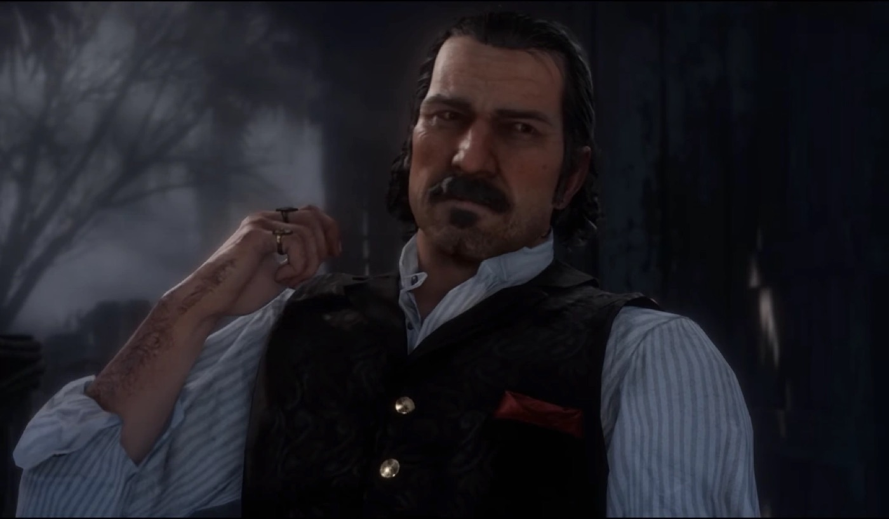
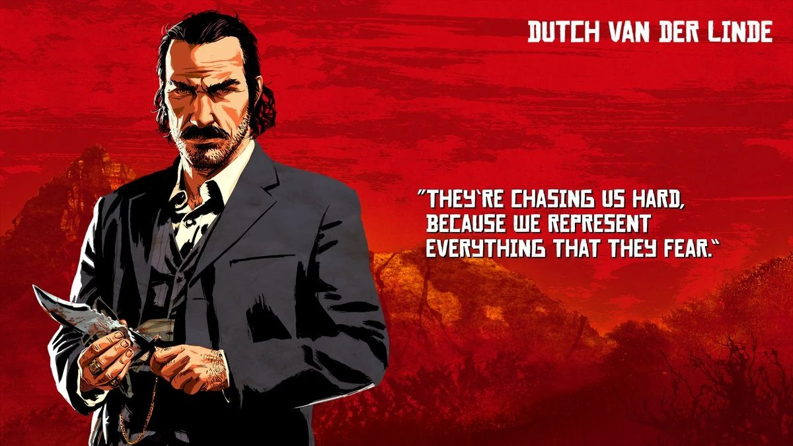
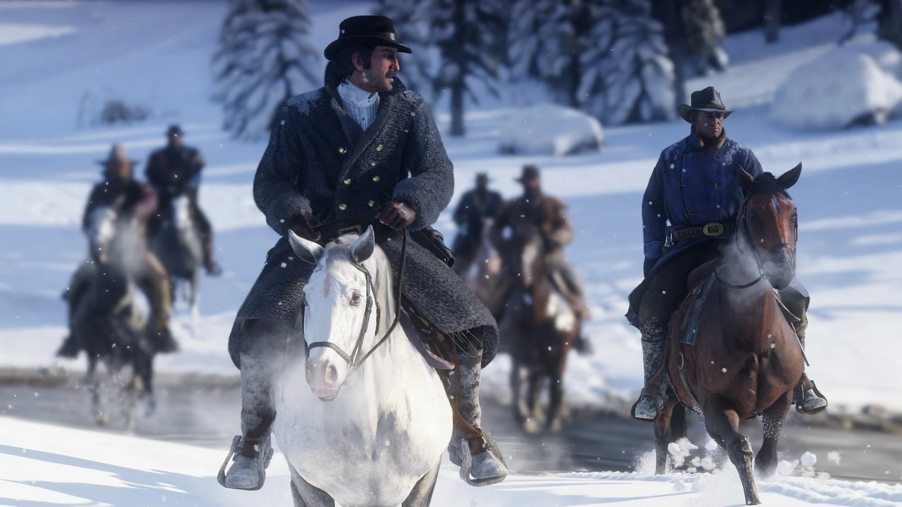
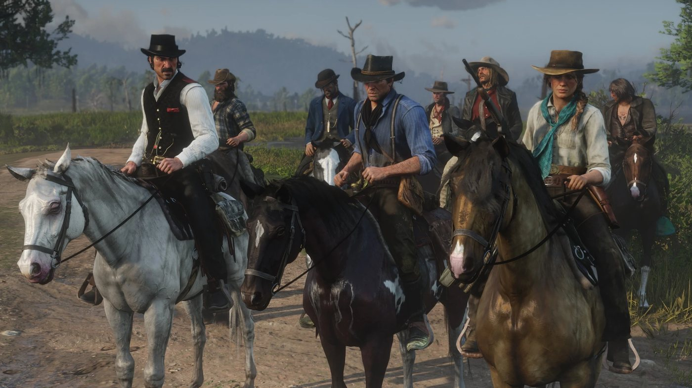
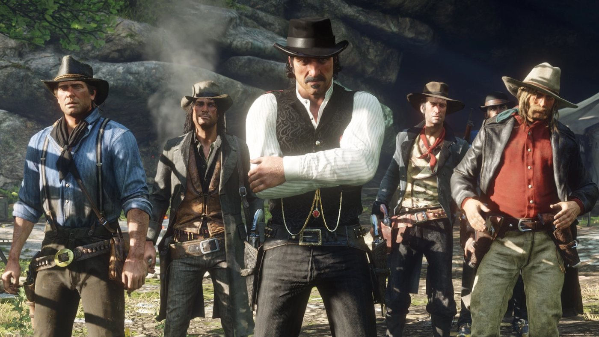
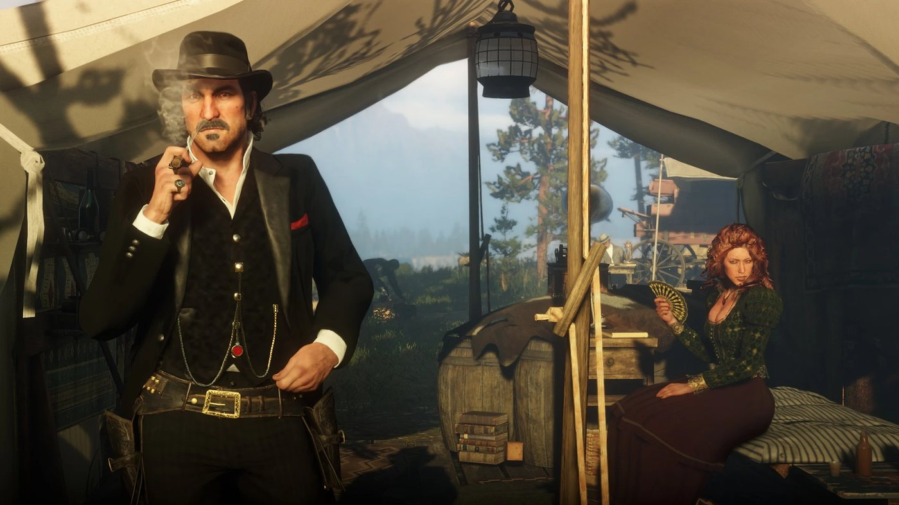
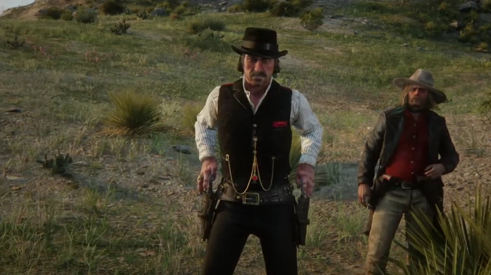
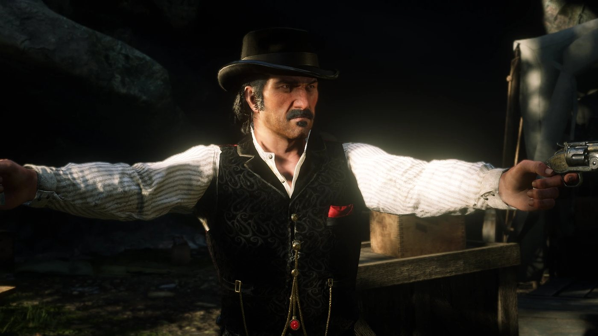

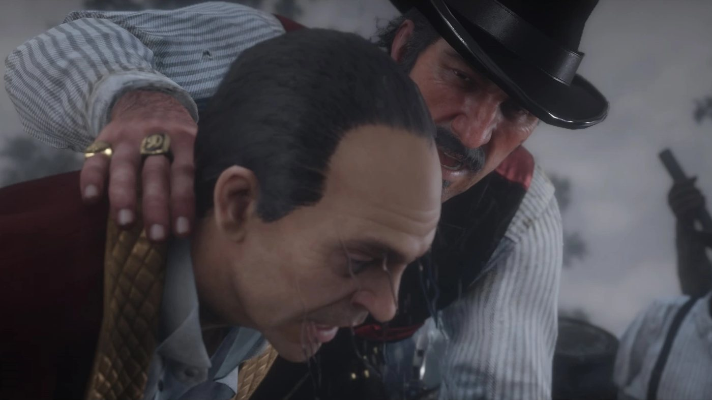
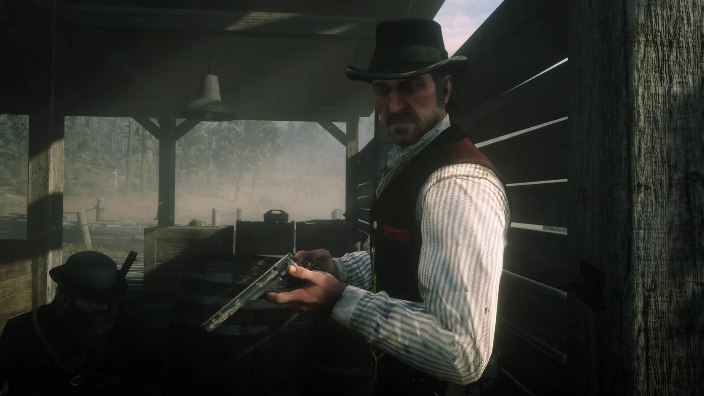
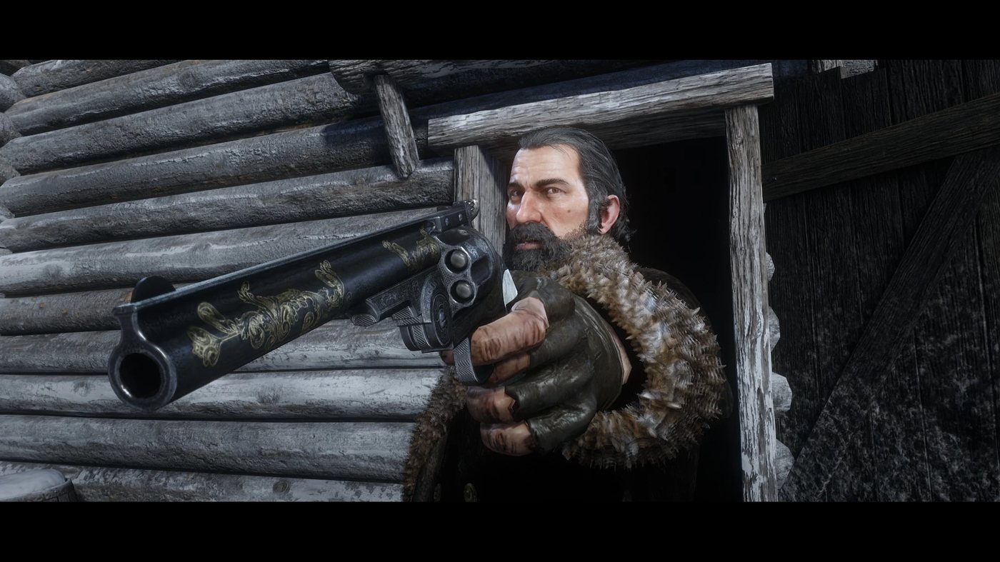
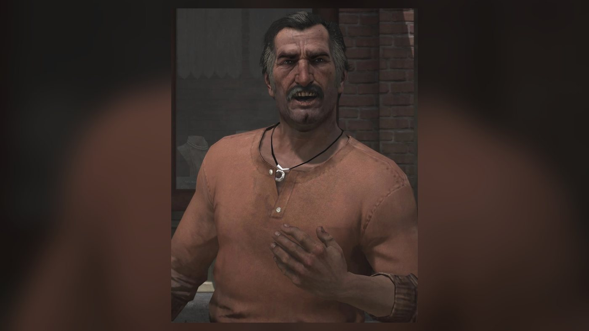
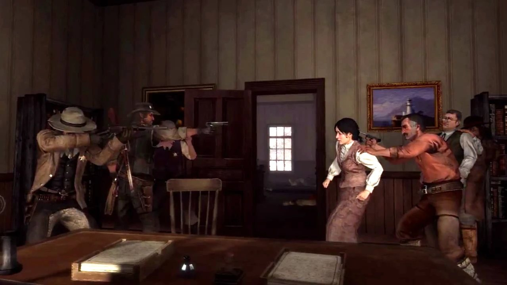
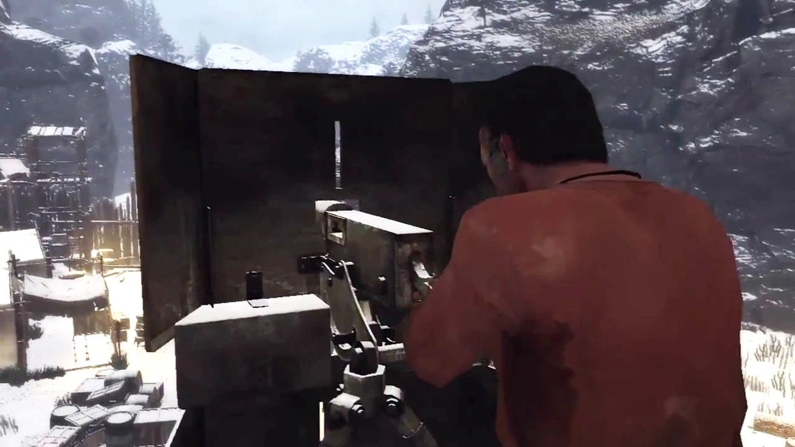
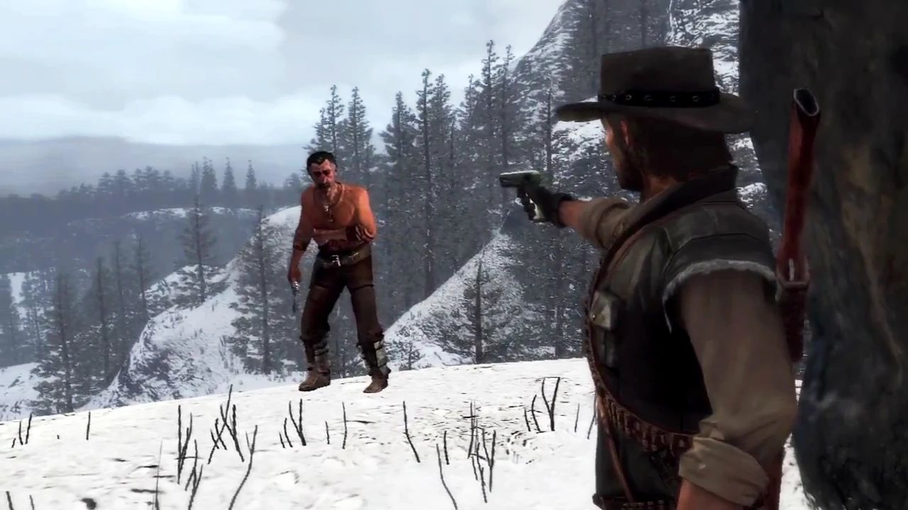
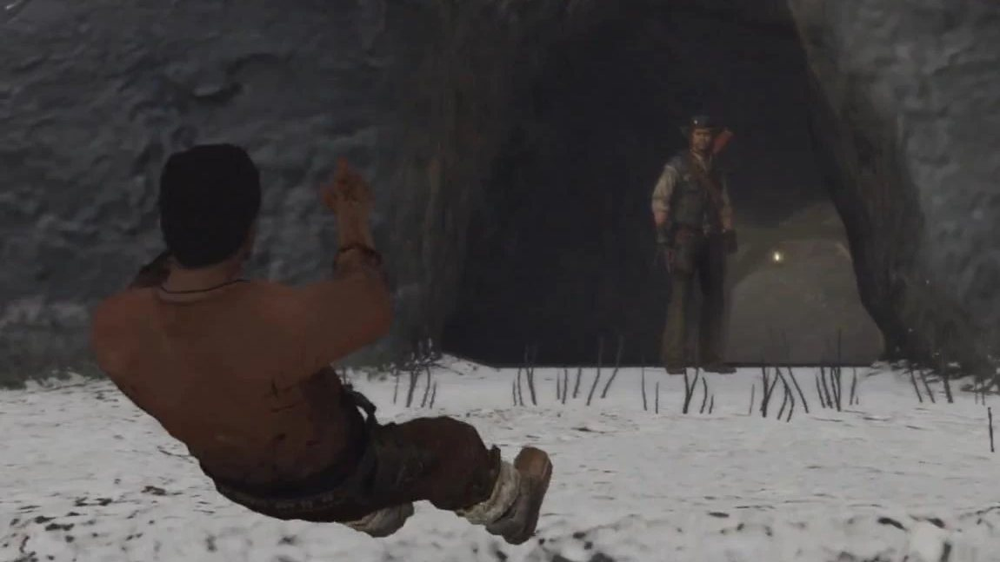
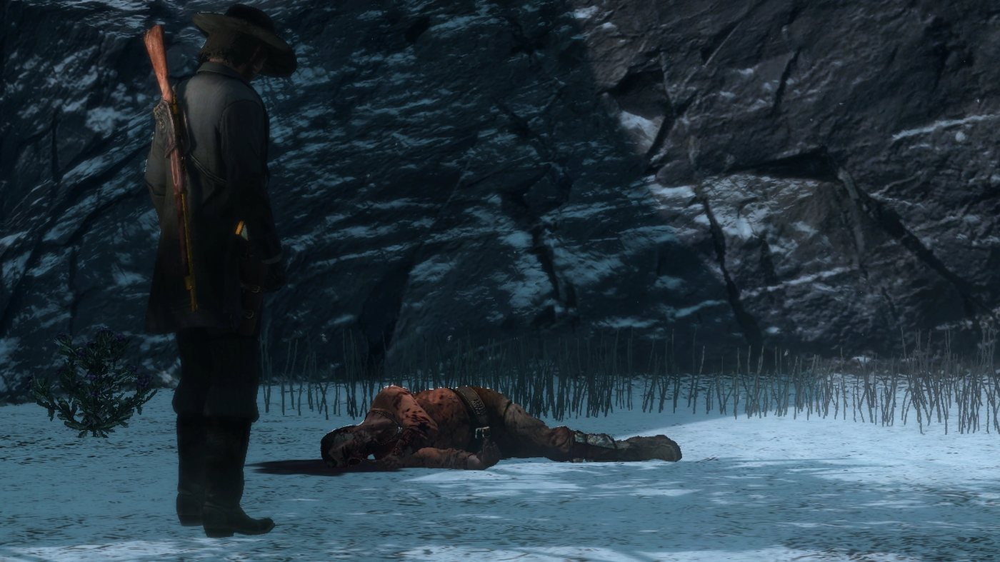